Every module of Rasgo Modular explained on three levels — what it is, where it sits among its neighbours, and a chain to try. It is the same text the LEARN box shows inside the instrument when you hover a module's body; here it is all together, to read before or after playing.
SOURCE 13 modules
OSC
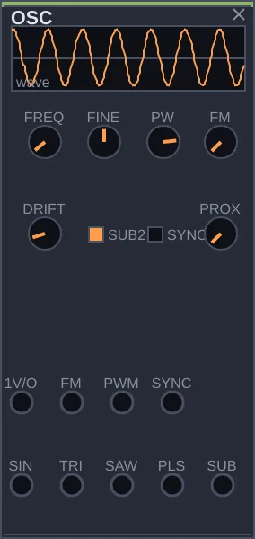
What it is
OSC is an oscillator: it produces a steady, unchanging tone, the raw material almost every synthesizer sound is built from. It gives you five waveforms at once, each on its own output jack: sine, triangle, sawtooth, pulse, and a voice one or two octaves below (the sub). Pick one, or use several.
How to think about it
Think of OSC as raw material. On its own it sounds plain, and that is on purpose: the character comes from what you connect after it, such as a filter that takes away brightness or an envelope that shapes each note. If you want a voice with a personality of its own, STRING and MATTER already have one; if you want a tone that changes by itself, try WAVETABLE. OSC is the predictable foundation, which makes it the best place to learn.
Controls
FREQ: the pitch of the note, from 8 to 8000 Hz. Low values become a slow vibration; the musical range sits roughly between 50 and 1000 Hz.
FINE: fine tuning, up to a semitone up or down. Use it to tune against another voice, or to detune slightly and thicken the sound.
PW: the pulse width, which only affects the PLS output. In the middle the wave is square and sounds hollow; near the ends it gets thin and nasal.
FM: how much the signal on the FM input moves the pitch. With another oscillator there and this knob turned up, the tone turns metallic, like a bell.
DRIFT: a small, slow wobble in the tuning, like an analog oscillator. At zero the note stays perfectly still.
SUB2: sets whether the SUB output sits one octave (off) or two octaves (on) below the note.
SYNC: enables the SYNC input. With it on, another, slower oscillator forces this one to restart its cycle, and turning FREQ changes the tone instead of the pitch.
PROX: blends each output with a darker version of itself. A way to soften the sound without using up a filter.
Inputs: 1V/O takes pitch from a sequencer or quantizer, FM and PWM accept modulation, and SYNC takes the oscillator that drives the sync.
Try this
Connect the SAW output of OSC to a MIXER input and listen to a steady buzz.
Turn FREQ slowly: the note goes up and down.
Move the cable to the PLS output and sweep PW from one side to the other. The tone goes from hollow to thin while the pitch stays put.
Go back to SAW and run the sound through a FILTER before the MIXER. You are now doing subtractive synthesis: starting from a rich sound and taking away what you don't need.
WAVETABLE
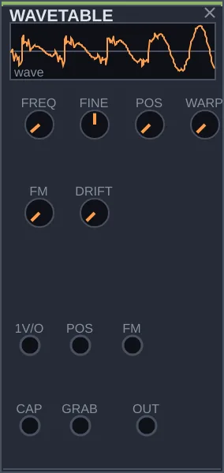
What it is
WAVETABLE is an oscillator that holds a sequence of 16 different waveforms, like the frames of an animation, from the brightest (a saw) to the smoothest (a sine). The POS knob picks where you are in that sequence. As you move POS, the tone changes smoothly, with no filter needed.
How to think about it
Where OSC gives you a fixed sound to sculpt afterwards, WAVETABLE is born in motion: all it takes is something moving POS. A slow LFO makes a pad that breathes; an envelope makes each note start bright and end dark. It can also listen: connected to SIGNAL-IN, it captures one cycle of the incoming sound and starts using it as its waveform.
Controls
FREQ: the pitch of the note, from 8 to 8000 Hz.
FINE: fine tuning, up to a semitone either way.
POS: the position in the table. At the start the sound is full of harmonics; at the end it is almost a sine. The POS input adds to this knob, and that is how the tone starts moving on its own.
WARP: bends the reading of each cycle and adds harmonics with a digital accent, without changing frames.
FM: how much the signal on the FM input moves the pitch.
DRIFT: a small, slow wobble in the tuning.
Inputs: 1V/O for pitch, POS to move the position, FM, CAP for the sound to capture, and GRAB, a pulse that tells it to capture a new cycle.
Try this
Connect OUT to a MIXER input and turn POS from end to end. Hear the tone go from rough to smooth.
Connect the output of a slow FUNCTION to the POS input. Now the sound changes by itself, in cycles.
To capture: connect SIGNAL-IN to the CAP input and a CLOCK pulse to GRAB. On each pulse, the oscillator starts playing a slice of the incoming sound.
ADDITIVE
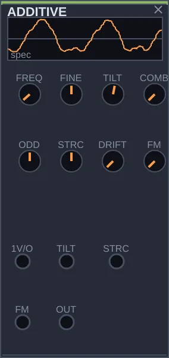
What it is
ADDITIVE builds sound by adding up 64 sine waves, each at a different frequency. These sines are called partials, and together they make the tone. Instead of starting from a rich sound and cutting it down, as a filter does, here you decide how strong each partial is. This is how you get to organs, bells, vibraphones and pads.
How to think about it
The four central knobs shape the whole spectrum at once, so you never have to touch 64 controls. TILT sets the brightness, ODD balances even and odd partials, STRCH detunes the partials from one another so the sound turns to metal or glass, and COMB carves notches into the spectrum. All of them accept modulation: an envelope on TILT makes each note open up in brightness at the attack, like an acoustic instrument.
Controls
FREQ: the fundamental, from 8 to 8000 Hz.
FINE: fine tuning, up to a semitone either way.
TILT: brightness. To the left, only the low partials sound and the tone is dark; to the right, all of them sound strongly.
ODD: the balance between partials. In the middle, the full series; to the right, only the odd ones, with the hollow sound of a clarinet; to the left, only the even ones, more nasal.
STRCH: stretches or squeezes the spacing between partials. In the middle the sound is in tune; towards either side it becomes a bell, metal, or something hard to name.
COMB: carves regular notches into the spectrum, like a comb filter. At zero nothing changes.
FM: how much the signal on the FM input moves the pitch.
DRIFT: lets each partial detune and breathe a little, slowly. At zero the sound is completely stable.
Inputs: 1V/O for pitch, TILT and STRCH to modulate those two controls, and FM.
Try this
Connect OUT to a MIXER input with TILT in the middle. You hear a soft note.
Move STRCH slowly to the right. The pitched note turns into a bell.
Bring STRCH back to the middle and move ODD from side to side. Hear the tone go from nasal to hollow.
Connect the ENV output of an ENVELOPE to the TILT input, and the CLK output of CLOCK to the GATE input of the ENVELOPE. On each pulse the sound starts bright and darkens, like a plucked string.
OPERATOR
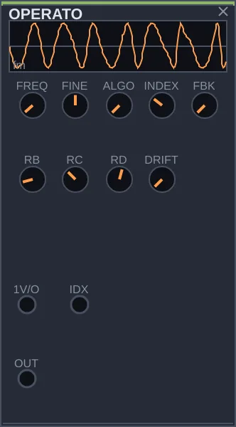
What it is
OPERATOR is an FM synthesizer with four sine oscillators, called operators. In FM, an operator does not sound on its own: it pushes another operator's frequency back and forth very fast, and new harmonics are born from that. This is how electric pianos, bells, snappy basses and metallic tones are made, as on the digital synthesizers of the 1980s.
How to think about it
Three decisions make the tone: who modulates whom (ALGO), the frequency ratio between operators (RB, RC, RD), and the strength of the modulation (INDEX). Start with INDEX low and raise it slowly: the sound goes from a clean sine to something bright and harsh. The most useful move is to connect an envelope to the IDX input, so each note starts bright and darkens, like an electric piano key.
Controls
FREQ: the pitch of the note, from 8 to 8000 Hz.
FINE: fine tuning, up to a semitone either way.
ALGO: picks one of eight arrangements of who modulates whom. At the start the operators are chained and the sound is harsher; at the end they sound side by side, closer to an organ.
RB, RC, RD: each operator's frequency ratio to the first. Whole numbers sound in tune; fractional values such as 2.5 sound like bells; high values, like metal.
INDEX: the strength of the modulation. At zero you hear only pure sines; at maximum, a very bright tone.
FBK: makes the first operator modulate itself. On its own it already turns the sine into something close to a sawtooth.
DRIFT: detunes each operator a tiny bit, slowly. At zero everything stays stable.
Inputs: 1V/O for pitch and IDX to modulate the FM strength.
Try this
Connect OUT to a MIXER input with INDEX at zero: a plain sine.
Raise INDEX slowly and hear the harmonics appear.
Set RB to a fractional value and the sound becomes a bell.
Connect the ENV output of an ENVELOPE to the IDX input, and the CLK output of CLOCK to the GATE input of the ENVELOPE. Each note opens bright and fades, like an electric piano.
PULSAR
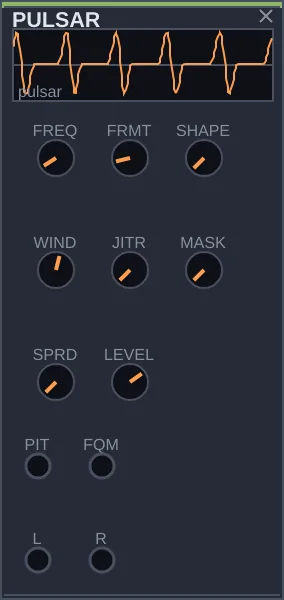
What it is
PULSAR produces a train of tiny sound pulses, each followed by silence. When the pulses repeat quickly you hear a note; when they slow down you hear a rhythm. The technique comes from the composer Curtis Roads and has a curious property: pitch and tone are controlled separately, so you can change the color of the sound without detuning it.
How to think about it
FREQ sets how many times per second the pulse repeats, and so the note. FRMT sets what happens inside each pulse, and so the tone: low sounds hollow, high sounds nasal. Bring FREQ down to around 30 repeats per second and each pulse becomes an event you hear on its own; with MASK and JITR, those events turn irregular, like a cloud.
Controls
FREQ: the pulse repetition rate, from 20 to 2000 Hz. This is the pitch of the note.
FRMT: the frequency inside each pulse, from 0.1 to 8 times FREQ. This is the tone: low is hollow, high is bright.
SHAPE: the shape of each pulse, from a plain sine to a narrower pulse rich in harmonics.
WIND: the contour of each pulse. To the left the edges are hard and the sound is bright; in the middle it is clean; to the right each pulse attacks fast and decays, like percussion.
JITR: makes the timing and level of each pulse irregular. At zero the train is rigid.
MASK: the chance of each pulse being skipped. It opens gaps and creates rhythmic patterns without changing the note.
SPRD: spreads alternate pulses between left and right, widening the sound in stereo.
LEVEL: the output level.
Inputs: PIT for pitch and FQM to modulate the tone. Outputs L and R, for stereo.
Try this
Connect L to a MIXER input and turn FRMT slowly. The tone changes, but the note stays where it is.
Bring FREQ close to its minimum. The note falls apart into pulses you can hear one by one.
With FREQ low, raise MASK and JITR. The pulses become sparse and irregular, like rain.
Connect the BI output of a slow FUNCTION to the FQM input. The tone wanders on its own without going out of tune.
SPECTRA
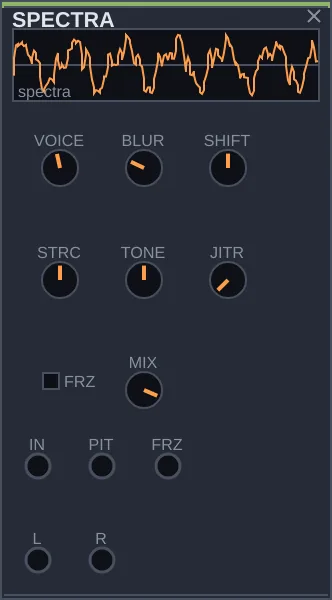
What it is
SPECTRA listens to a sound, finds its strongest frequencies, and plays them again with a set of sine oscillators. The result is a kind of shadow of the original: recognizable, but made only of pure tones, and you can transpose it, bend it, or freeze it.
How to think about it
It sits among the source modules because its output is what you hear, but it almost always needs something on the IN input: a voice, a chord, a drum, or outside sound through SIGNAL-IN. With few voices it draws a caricature of the sound; with many, a faithful copy. Its strongest move is FRZ: it freezes the last spectrum and keeps it ringing indefinitely, like a pad lifted from any moment.
Controls
VOICE: how many sines the module uses, from 2 to 24. Few simplify the sound; many reproduce it faithfully.
BLUR: how quickly each sine follows the incoming sound. At zero it tracks closely; at maximum it drags and smears, and the sound seems to melt.
SHIFT: transposes the reconstruction up to two octaves up or down, without touching the listening.
STRCH: pushes the frequencies apart or together, taking the sound towards metal or bell without changing the perceived pitch.
TONE: darkens or brings out the highs of the reconstruction. In the middle it stays true to what was heard.
JITR: makes each sine wobble slightly, so the reconstruction never sounds static.
FRZ: freezes the listening. The sines keep playing the last spectrum.
MIX: the blend between the original sound and the reconstruction. At maximum you hear only the reconstruction.
Inputs: IN for the sound to analyze, PIT to transpose and FRZ to freeze with a gate. Outputs L and R.
Try this
Connect the OUT output of CHORD to the IN input of SPECTRA, and the L output to a MIXER input. You hear the chord rebuilt in pure tones.
Lower VOICE to 3 or 4. The chord becomes a sketch of itself.
Move STRCH to one side and hear the chord turn metallic.
Connect the EUC output of CLOCK to the FRZ input. The sound freezes and lets go in time with the clock.
PLL
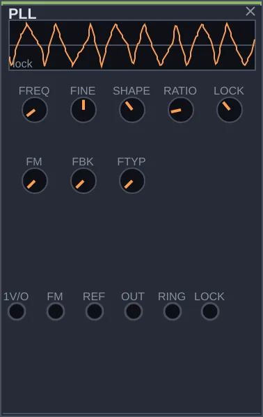
What it is
PLL is an oscillator that knows how to follow another. On its own it works like any oscillator, with its own pitch and a waveform you choose. When it receives a second signal on the REF input, it gradually adjusts its speed until it moves together with that signal, like a musician falling into step with another.
How to think about it
OSC can also lock to another oscillator, but all at once (that is sync). PLL does it gradually, and that path towards locking is audible: a gliding pitch. With RATIO it locks an octave above, an octave below, or at deeper divisions of the reference. The LOCK output tells you how locked it is, and you can use it to make other things react.
Controls
FREQ: the pitch when there is no reference, and the starting point when there is.
FINE: fine tuning, up to a semitone either way.
SHAPE: the waveform, moving from sine to triangle, sawtooth and square.
RATIO: the relationship to the reference it locks to. At 1, the same note; at 2, an octave above; near the minimum, far below.
LOCK: how hard it chases the reference. Low, it glides slowly until it arrives; high, it locks quickly but gets more jittery.
FM: how much the signal on the FM input moves the pitch.
FBK: how much of its own signal goes back into the circuit, adding texture without detuning.
FTYP: picks one of six feedback types, each with a different color.
Inputs: 1V/O for pitch, FM, and REF, the reference to follow. Outputs: OUT, RING (the PLL multiplied by the reference) and LOCK, a control signal showing how locked it is.
Try this
Connect OUT to a MIXER input. With nothing on REF it is an ordinary oscillator; turn SHAPE to hear the waveforms.
Connect the SAW output of an OSC to the REF input. PLL searches for the OSC's pitch and locks onto it.
Lower LOCK. Now it takes its time getting there, and you hear the pitch glide.
Set RATIO to 2. It locks an octave above the OSC.
CHORD
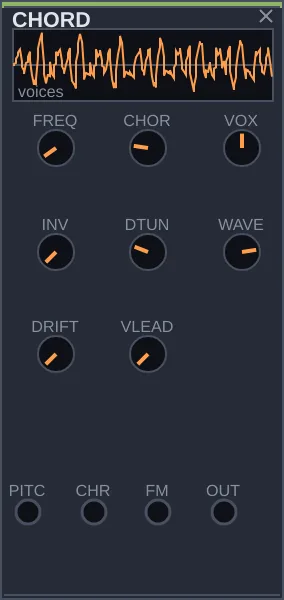
What it is
CHORD turns one note into a chord. You give it a pitch and it plays two to four voices tuned above it, in shapes that range from unison to chords with a ninth. In a modular, a chord normally takes several oscillators and quantizers; here one module is enough.
How to think about it
Think of it as a hand on a keyboard that already knows the chord shape. The CHORD knob picks the shape, VOX how many notes it has, and INV how the notes are stacked. A slow wave on the CHRD input changes the shape by itself; the ROOT output of HARMONY on the PITCH input makes the root follow key changes. With VLEAD, each voice moves to the nearest note of the next chord, gliding, and the change sounds as smooth as a choir.
Controls
FREQ: the fundamental, from 16 to 4000 Hz.
CHORD: the chord shape, from ten tables, from unison to chords with a ninth.
VOX: how many voices sound, from two to four.
INV: moves the lowest notes up an octave. It changes the look of the chord without changing the notes.
VLEAD: on a chord change, makes each voice move to the nearest note, gliding. At zero they all jump at once.
DTUNE: detunes the voices from one another. A little thickens the sound; a lot becomes a wall.
WAVE: the waveform of the voices, from sawtooth to pulse and triangle.
DRIFT: lets each voice wobble slightly in tuning, slowly.
Inputs: PITCH for the fundamental, CHRD to change the shape, and FM.
Try this
Connect OUT to a MIXER input and turn CHORD slowly. Hear the shapes go by.
Change VOX from 2 to 4 and the chord fills out.
Raise DTUNE a little: the voices drift apart and the sound gets wider.
Connect the CLK output of CLOCK to the CLK input of a SEQUENCE, and the PTCH output of the SEQUENCE to the PITCH input of CHORD. The chord now moves with the sequence.
NOISE
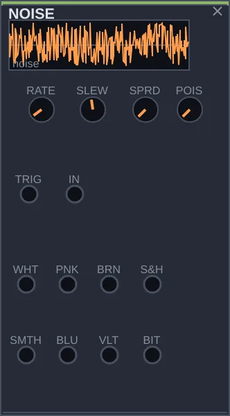
What it is
NOISE produces noise, the sound of all frequencies mixed at random, in several colors at once, each on its own output: from white, hissy and bright, to brown, deep like the sea. It also produces slow random values, which you can use to make other modules change on their own.
How to think about it
NOISE has two very different uses. As sound, it is the stuff of wind, rain, cymbals and the crack of a snare. As chance, it is a source of variation for generative patches: the S&H output picks a new value on each pulse and holds it until the next, and SMTH glides from one value to another. Connect one of them to an oscillator's pitch, through a quantizer, and you have a melody that never repeats the same way.
Controls
RATE: how often the S&H and SMTH outputs pick a value, from very slow to 2000 times per second. If the TRIG input is connected, it takes over from this knob.
SLEW: how long the SMTH output takes to reach each new value. At zero it jumps; at maximum it glides slowly.
SPRD: the kind of draw. At zero every value is equally likely; at maximum, values near the middle come up more often and the changes get gentler.
POIS: replaces the regular rhythm of the draws with irregular, random timing, keeping the same average.
Sound outputs: WHT (white), PNK (pink), BRN (brown), BLU (blue), VLT (violet) and BIT (digital noise). Chance outputs: S&H and SMTH. Inputs: TRIG, to trigger the draws, and IN.
Try this
Connect PNK to a MIXER input. You hear a soft hiss, like rain.
Switch to BRN, deeper, and then to WHT, brighter.
Connect S&H to the CV input of a QUANTIZER, and its PTCH output to the 1V/O input of an OSC that is sounding. The note starts jumping at random, always within the scale.
Connect the CLK output of CLOCK to the TRIG input: the jumps now happen in time with the clock.
MATTER
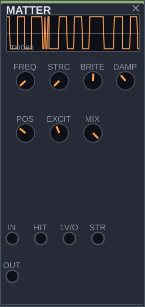
What it is
MATTER simulates an object that vibrates when struck: a string, a bell, a metal plate, a tube. Inside it has 24 resonances that ring together, like those of a real object. You strike it and hear the object answer, with the tuning and material you choose.
How to think about it
A filtered oscillator sounds electronic; MATTER sounds like something being played. You don't build the tone harmonic by harmonic: you choose the material with STRC and where the object is struck with POS, and then you excite it. The strike can come from inside, through the HIT input, or from outside, from any sound connected to IN. A CLOCK hitting HIT is already tuned percussion.
Controls
FREQ: the tuning of the object, from 20 to 8000 Hz.
STRC: the material. At the start, a string, sweet and in tune; at the end, bell or metal, with scattered resonances.
BRITE: how many high resonances ring. Low is muffled; high is bright.
DAMP: how long the object keeps ringing after the strike. Low is a short tap; high is a long ring.
POS: the point where the object is struck. As the point moves, some resonances disappear and others appear, as on a real instrument.
EXCIT: how much noise goes into the strike. Low is a clean tap; high has more air in the attack.
MIX: the blend between the raw strike and the object's resonance. At maximum, only the body of the object.
Inputs: IN, to make an outside sound resonate; HIT, a pulse that strikes; 1V/O, for tuning; STR, to change the material.
Try this
Connect OUT to a MIXER input, and the CLK output of CLOCK to the HIT input. You hear tuned hits.
Turn STRC from end to end. The hit goes from string to bell.
Raise DAMP until the hits run together into a continuous ring.
Move POS slowly and hear the tone change with the striking point.
STRING
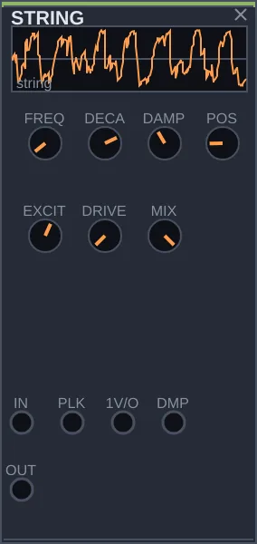
What it is
STRING simulates a string: plucked, as on a guitar; hammered, as on a piano; or bowed, as on a violin. It recreates the behavior of a string that vibrates and gradually loses energy, which is why the attack and body of the sound feel natural even though they are synthetic.
How to think about it
MATTER is the module for objects that ring, like bells and plates; STRING is the one for strings. Its main gesture is POS, the point where the string is played: as that point moves, some harmonics disappear, just as when a guitarist plays closer to the bridge. A pulse on PLK plucks the string; a continuous sound on IN makes it sing as if bowed.
Controls
FREQ: the tuning of the string, from 20 to 4000 Hz.
DECAY: how long the string rings after being plucked. Low is dry; high barely ends.
DAMP: brightness. High makes the string dark, like an old string; low keeps the brightness of a new one.
POS: the point where the string is played. Near the middle, the even harmonics vanish and the sound turns hollow.
EXCIT: how much noise goes into the strike, like the sound of a finger or pick.
DRIVE: saturates the string from inside, taking it from an acoustic sound to a distorted one.
MIX: the blend between the raw strike and the string. At maximum, only the string.
Inputs: IN, a sound that makes the string vibrate; PLK, a pulse that plucks it; 1V/O, for tuning; DMP, to change the brightness.
Try this
Connect OUT to a MIXER input, and the EUC output of CLOCK to the PLK input. The string is plucked in time with the clock.
Turn DECAY: from dry notes to notes that run into each other.
Move POS slowly and hear the tone change with the playing point.
Connect the PTCH output of a SEQUENCE, driven by the same CLOCK, to the 1V/O input. Now the string plays a melodic line.
DRUM
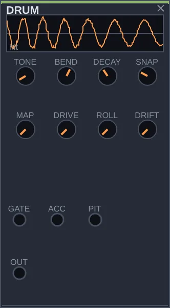
What it is
DRUM is a ready-made percussion voice: on each pulse at the GATE input, it plays a hit. With a few knobs it goes from kick to snare, tom and hi-hat, and shifts in character between the sound of old drum machines and a more acoustic sound.
How to think about it
Building a kick drum from scratch takes several modules; DRUM gives you one ready to go. It needs something to tell it when to play: a CLOCK or, better, a TRIGSEQ, which generates rhythmic patterns on four lanes. Four DRUM modules, one on each TRIGSEQ lane, make a kit. And since TONE accepts a pitch through the PIT input, you can play a line of toms.
Controls
TONE: the pitch of the body of the hit, from 20 to 1000 Hz. Low is a kick; mid, a tom or snare; high, something like a clave.
BEND: how far the pitch drops right after the hit. High gives a kick its weight; zero keeps the hit on a single pitch.
DECAY: the length, from a short click to a sustained boom.
SNAP: the amount of crack in the attack, which gives body to snare and hi-hat.
MAP: the character, moving through drum-machine tones to an acoustic sound.
DRIVE: saturates the output and makes the hit more aggressive.
ROLL: makes the module trigger itself, from a slow roll to a buzz. At zero it only plays when it receives a pulse.
DRIFT: varies each hit slightly, so repetition sounds played rather than programmed.
Inputs: GATE, the pulse that fires the hit; ACC, for accents; PIT, for pitch.
Try this
Connect OUT to a MIXER input, and the CLK output of CLOCK to the GATE input. You hear a kick keeping time.
Raise TONE and SNAP, lower DECAY: the kick becomes a dry snare.
Raise ROLL with nothing on GATE: the module plays by itself, in a roll.
Connect CLOCK to a TRIGSEQ and its T1 and T2 outputs to two DRUM modules set up differently. You have a small drum kit.
SIGNAL-IN
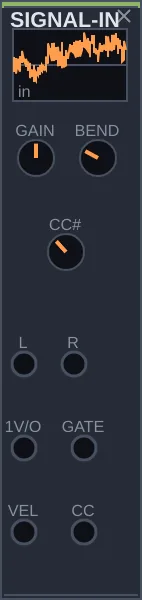
What it is
SIGNAL-IN brings the outside world into the patch. It takes sound from the computer's audio input, such as a microphone or another instrument, and notes from a MIDI keyboard or controller, and turns them into signals the other modules understand.
How to think about it
With it, someone outside can play Rasgo Modular: the key's pitch goes to an oscillator, holding the key opens an envelope, and the keyboard's mod wheel can open a filter. It also lets the patch process outside sound, running a voice or a guitar through filters and spaces. The app only opens the audio input when there is a SIGNAL-IN in the patch.
Controls
GAIN: the level of the incoming audio, from zero to double.
BEND: how many semitones the keyboard's pitch bend moves the pitch, from zero to two octaves.
CC#: which keyboard controller the CC output follows. Number 1 is usually the mod wheel.
Outputs: L and R, the incoming audio; 1V/O, the pitch of the key played; GATE, open while the key is held; VEL, how hard it was played; CC, the value of the chosen controller.
Try this
With a microphone or instrument connected to the computer, connect L to a MIXER input and adjust GAIN until you hear the sound.
Run that sound through a FILTER or SPACE before the MIXER to transform it.
With a MIDI keyboard, connect 1V/O to the 1V/O input of an OSC, and GATE to the GATE input of an ENVELOPE that has the OSC's sound on its IN input. The keyboard now plays the patch.
TRANSFORM 14 modules
FILTER
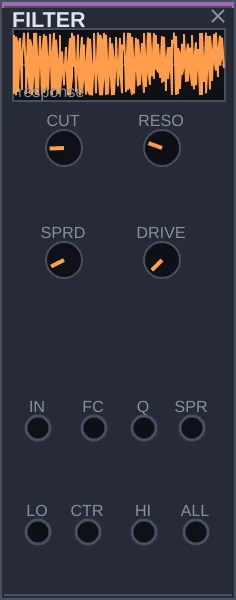
What it is
FILTER lets part of a sound's frequencies through and cuts the rest. It has three outputs working at the same time: LO, which passes the lows; CTR, the middle band; and HI, the highs. As you turn the cutoff, you hear the sound darken or brighten, like covering your mouth while you speak.
How to think about it
It is the second module in almost every patch: after a source rich in harmonics, such as an OSC saw, the filter sculpts the tone. What sets it apart is SPRD: at zero, all three outputs share the same cutoff; as you raise it, they move apart and become three different filters, each on its own region of the sound. With resonance at maximum, the filter starts sounding by itself, like a sine oscillator.
Controls
CUT: the cutoff frequency, from 20 to 20000 Hz. This is the main control: turn it and hear the tone open and close.
RESO: emphasizes frequencies near the cutoff, giving a more nasal tone. At maximum the filter starts sounding on its own.
SPRD: spreads the three outputs apart in frequency. At zero all three follow the same cutoff; at maximum each sits in its own region of the sound.
DRIVE: saturates the signal before filtering, fattening the sound.
Inputs: IN, the sound to filter; FC, to move the cutoff (1 V per octave); Q, to move the resonance; SPR, to move the spread. Outputs: LO, CTR, HI and ALL, which adds the three together.
Try this
Connect the SAW output of an OSC to the IN input, and the ALL output to a MIXER input.
Turn CUT slowly from one side to the other and hear the brightness come and go.
Raise RESO halfway and do it again: the cutoff becomes pronounced, almost a voice.
Connect the ENV output of an ENVELOPE to the FC input, with CLOCK on the envelope's GATE input. The filter opens on every pulse, a sound heard in a great deal of electronic music.
FORMANT
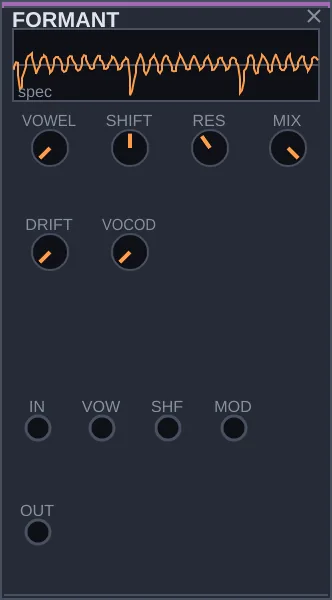
What it is
FORMANT makes a sound pronounce vowels. The human voice tells an A from an I by the way it reinforces certain frequency bands, called formants. This module has five filters placed like the formants of a voice, and moves from one vowel to another as you turn VOWEL.
How to think about it
Run any rich sound through it, such as a CHORD chord or a saw, and the sound starts to speak. The VOWEL knob goes through A, E, I, O and U; modulated, it makes the sound sing a sequence of vowels. SHIFT changes the size of the voice, from large and deep to small and high, without changing the note. With another sound on the MOD input, it becomes a simple five-band vocoder.
Controls
VOWEL: the vowel, going through A, E, I, O and U.
SHIFT: the size of the voice. One way, large and deep; the other, small and high. The note doesn't change.
RES: how narrow the five filters get. Low gives a subtle color; high makes each formant whistle.
VOCOD: replaces the vowels with the sound coming into MOD, which then controls the five filters. With nothing on MOD, it has no effect.
MIX: the blend between the original and the filtered sound.
DRIFT: makes each formant wobble slightly, so the voice breathes.
Inputs: IN, the sound that will speak; VOW and SHF, to modulate vowel and size; MOD, the sound that drives vocoder mode.
Try this
Connect the OUT output of CHORD to the IN input, and OUT to a MIXER input.
Turn VOWEL slowly: the chord pronounces the vowels.
Raise RES and hear the vowels get sharper.
Connect the BI output of a slow FUNCTION to the VOW input. The chord now sings vowels by itself.
VOCODER
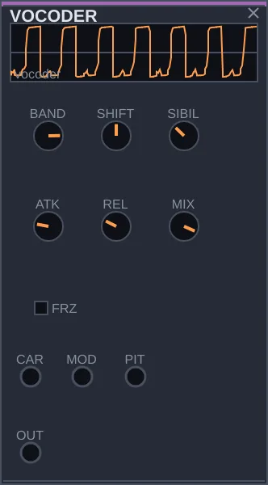
What it is
VOCODER makes one sound speak with another's voice. It listens to a sound, usually a voice, and measures how much energy there is in each frequency band; then it applies that pattern to a second sound, rich in harmonics. The result is the second sound carrying the speech of the first: the robot-voice effect heard in so much electronic music.
How to think about it
It needs two inputs: CAR, the carrier, which is the sound that will speak (a saw, a chord), and MOD, the one doing the talking (a voice through SIGNAL-IN, a drum, a recording). With few bands the result is coarse and robotic; with many, the speech becomes clear. Nothing on CAR? It uses an internal saw, tunable through the PIT input.
Controls
BANDS: how many frequency bands, from 4 to 20. Few sound robotic; many make the speech intelligible.
SHIFT: changes the size of the resulting voice, from large to small, without changing what is said.
ATK: how quickly each band responds. Short, consonants come out crisp; long, everything softens.
REL: how long each band takes to let go. Short is sharp; long smears the syllables into a pad.
SIBIL: how much of the voice's high end passes straight through, so S and T stay clear.
FRZ: freezes the current pattern. The carrier keeps saying the last syllable indefinitely.
MIX: the blend between the original carrier and the speaking carrier.
Inputs: CAR, the carrier; MOD, the voice that speaks; PIT, the pitch of the internal saw when nothing is on CAR.
Try this
Connect the SAW output of an OSC to CAR, and the L output of SIGNAL-IN, with a microphone, to MOD. Connect OUT to a MIXER input and speak.
Lower BANDS to 6 and hear the voice go robotic; raise it to 20 and it becomes clear.
Raise REL: the words run together into a continuous sound.
Without a microphone, connect the OUT output of a DRUM to MOD. Each hit opens the carrier in its own tone.
RESONATOR
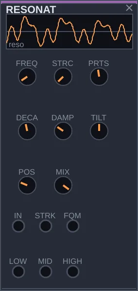
What it is
RESONATOR is a body that rings when something strikes it. You connect any sound to its input, a drum hit, a noise, a voice, and it answers like a marimba, a glass or a bell, depending on how it is set. It has three outputs, lows, mids and highs, which can go to different places.
How to think about it
MATTER also resonates, but it brings its own strike; RESONATOR lets you choose what hits it. A dry DRUM becomes a tuned marimba; a soft NOISE becomes wind across a glass. The TILT knob decides which of the three outputs dominates: with LOW and HIGH sent to different places, turning TILT moves the energy from one side to the other.
Controls
FREQ: the tuning of the body, from 20 to 5000 Hz.
STRC: the structure. At the start the resonances are in tune with each other; at the end they scatter, like a metal bar or a bell.
PRTS: how many resonances the body has, from 1 to 24. With just one it is almost a filter.
DECAY: how long the body rings after the strike, from a short tap to a long ring.
DAMP: makes the highs die away before the lows, as on a real string.
TILT: which region dominates. One way, the LOW output; the other, HIGH.
POS: the point where the body is struck, which changes which resonances appear.
MIX: the blend between the raw strike and the resonance.
Inputs: IN, the sound that strikes; STRK, a pulse for an internal strike; FQM, for tuning. Outputs: LOW, MID and HIGH.
Try this
Connect the CLK output of CLOCK to the GATE input of a DRUM, and the DRUM's OUT output to the IN input of RESONATOR. Connect MID to a MIXER input. Each hit sounds like a marimba key.
Turn STRC and hear the marimba turn into a bell.
Raise DECAY so the notes ring longer.
Replace the DRUM with the PNK output of a NOISE on IN, with DECAY high. You hear a soft ring, like a glass.
WASP
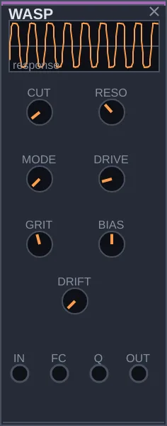
What it is
WASP is a filter that distorts. Inspired by a late-1970s synthesizer known for its rough sound, it cuts frequencies like FILTER does, but dirties the sound as the resonance goes up. It is the filter for aggressive basses, cutting leads and grinding drones.
How to think about it
FILTER is clean and precise; WASP is its dirty counterpart. Three knobs set how dirty: DRIVE pushes the sound into distortion before filtering, GRIT decides how much the filter grinds as it resonates, and BIAS makes the distortion lopsided, buzzier. With high resonance it sounds by itself, and that sound is rough too.
Controls
CUT: the cutoff frequency, from 20 to 24000 Hz.
RESO: the resonance. Near maximum, the filter sounds on its own.
MODE: the filter type, moving from low-pass to band-pass and high-pass.
DRIVE: the input gain, which pushes the sound into distortion before filtering.
GRIT: how much the filter distorts as it resonates. Low is nearly clean; high grinds.
BIAS: unbalances the distortion, adding even harmonics and a buzz.
DRIFT: a slow wobble in cutoff and resonance.
Inputs: IN, the sound to filter; FC, to move the cutoff; Q, for the resonance.
Try this
Connect the SAW output of an OSC to the IN input, and OUT to a MIXER input.
Raise RESO to about two thirds and turn CUT: hear the filter bite.
Raise GRIT and DRIVE. The sound gets rough and aggressive.
Connect the ENV output of an ENVELOPE to FC, with CLOCK on the envelope's GATE input. You have an acid bass.
LPG
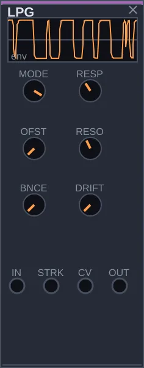
What it is
LPG, short for low pass gate, is a gate that opens and closes the sound on every strike, lowering the volume and darkening the tone at the same time. It imitates an old component, the vactrol, which reacts fast but lets go slowly, so every note sounds struck: a marimba, a kalimba, a drop of water.
How to think about it
You could build something similar with FILTER, VCA and ENVELOPE, but you would miss the vactrol's way of moving: an instant rise and a fall that slows down near the end. LPG has it built in. All it needs is a continuous sound on IN and pulses on STRK: each pulse becomes a played note. MODE chooses whether it acts more like a filter, more like a volume control, or both.
Controls
MODE: to the left, filter only; to the right, volume only; in the middle, both together, which is the characteristic LPG sound.
RESP: how long the note takes to die after the strike, from a very short tap to about two and a half seconds. The rise is always fast.
OFST: how open the gate stays at rest. At zero it closes completely between strikes.
RESO: the filter's resonance, which gives a more pronounced tone.
BNCE: adds a small rebound right after each strike.
DRIFT: varies the length of each note slightly and slowly.
Inputs: IN, the sound; STRK, the pulse that strikes; CV, to open the gate with a continuous signal.
Try this
Connect the TRI output of an OSC to the IN input, and OUT to a MIXER input. Silence for now: the gate is closed.
Connect the EUC output of CLOCK to the STRK input. Each pulse becomes a note with a struck tone.
Turn RESP to hear the notes get short or long.
Connect the PTCH output of a SEQUENCE, driven by the same CLOCK, to the OSC's 1V/O input. Now you have a marimba line.
VCA
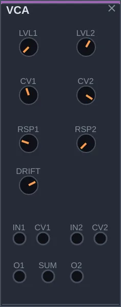
What it is
VCA controls the volume of one sound with another signal. It has two identical channels: the sound comes into IN, a control signal comes into CV, and the output volume rises and falls with that control. It is the most used module in any modular.
How to think about it
Think of it as a hand on a volume knob, moved by another module. With an envelope on the control, each note gets a beginning, a middle and an end. With a slow wave, the volume undulates, an effect called tremolo. It also works for scaling a control signal before sending it elsewhere, and the SUM output adds both channels, like a small mixer. Note that the level starts at zero, so the channel stays silent until something reaches CV or you raise LVL.
Controls
LVL1, LVL2: the volume of each channel. The control signal adds to this value.
CV1, CV2: how much the control signal acts, and in which direction. Negative inverts: the volume drops as the control rises.
RSP1, RSP2: the response curve. At zero, linear; at maximum, exponential, which sounds more natural for volume.
DRIFT: a small, slow wobble in both volumes.
Inputs: IN1 and IN2, the sounds; CV1 and CV2, the controls. Outputs: O1, O2 and SUM, the two added together.
Try this
Connect the SAW output of an OSC to IN1, and O1 to a MIXER input. Silence: LVL1 is at zero.
Raise LVL1 slowly and the sound appears.
Bring LVL1 back to zero and connect the ENV output of an ENVELOPE to CV1, with CLOCK on the envelope's GATE input. The sound now pulses with the notes.
Replace the envelope with the UNI output of a slow FUNCTION: the volume undulates, a tremolo.
VCA4
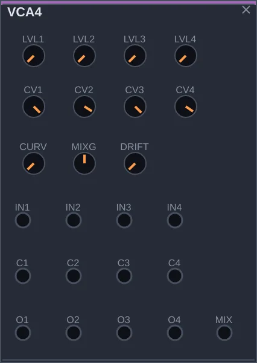
What it is
VCA4 puts four volume controls on one panel, plus an output that adds all four. Each channel works as in VCA: the sound comes in, a control signal decides the volume.
How to think about it
It is the VCA for when the patch grows: four voices, each with its own envelope; the low, mid and high outputs of a RESONATOR, each breathing at its own pace; or simply four sounds added on the MIX output, like a mixer. The four channels share the same response curve. As on VCA, the levels start at zero.
Controls
LVL1, LVL2, LVL3, LVL4: the volume of each channel. Each channel's control adds to this value.
CV1, CV2, CV3, CV4: how much each channel's control acts. Negative inverts the direction.
CURVE: the curve for all four channels, from linear to exponential.
MIXG: the volume of the MIX output, the sum of the four.
DRIFT: a small, slow wobble in all four volumes.
Inputs: IN1 to IN4, the sounds; C1 to C4, the controls. Outputs: O1 to O4 and MIX.
Try this
Connect the LOW, MID and HIGH outputs of a sounding RESONATOR to IN1, IN2 and IN3, and MIX to a MIXER input.
Raise LVL1, LVL2 and LVL3 until you hear all three regions.
Connect outputs of FUNCTION, CHAOS or NOISE, at different speeds, to C1, C2 and C3, and lower the LVL knobs. Each region of the sound now breathes at its own pace.
SHAPE
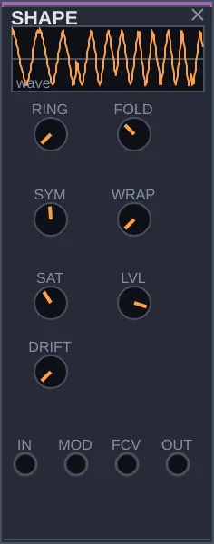
What it is
SHAPE enriches a sound by distorting it in controlled ways. It takes a simple wave, such as a sine, and folds it, saturates it, or multiplies it by another, creating new harmonics. The technique is associated with synthesizers from the west coast of the United States, which preferred adding harmonics to cutting them with filters.
How to think about it
A filter removes harmonics from a rich sound; SHAPE goes the other way, starting from a plain one. Its main gesture is FOLD: when the signal goes past a limit, it is folded back, and every fold adds brightness. With an envelope on the FCV input, each note opens the tone at the attack and closes it afterwards. RING multiplies the sound by whatever comes into MOD, which gives bell-like tones.
Controls
RING: blends the sound with its product with the signal on the MOD input. At maximum you hear only the product, metallic.
FOLD: the amount of folding. The more, the more high harmonics.
SYM: shifts the center of the fold and adds even harmonics, making the sound more nasal.
WRAP: swaps part of the fold for a hard cut that reappears on the other side, harsher.
SAT: rounds off the peaks after the fold, softening the result.
LVL: the output volume.
DRIFT: a slow wobble in the amount of folding.
Inputs: IN, the sound; MOD, the second signal for RING; FCV, to modulate the fold.
Try this
Connect the SIN output of an OSC to the IN input, and OUT to a MIXER input. You hear a clean sine.
Raise FOLD slowly and hear the sine gain brightness, fold by fold.
Move SYM to one side: the sound gets more nasal.
Bring FOLD back to zero, connect the SAW output of another OSC to MOD and raise RING. Tune the two oscillators to distant notes and the sound turns into a bell.
SHIFTER
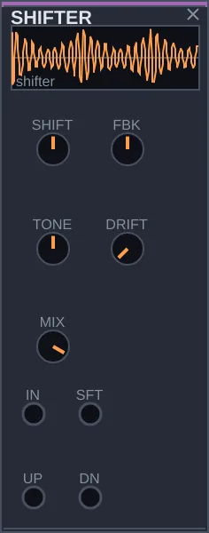
What it is
SHIFTER moves every frequency in a sound by the same number of hertz. The difference from transposing lies in the arithmetic: transposing multiplies the frequencies and keeps the relationship between them; shifting adds a fixed amount and breaks that relationship. That is why a pitched sound turns metallic, bell-like, and with small shifts takes on a slow swirling motion.
How to think about it
It gives you two results at once: UP, with the sound shifted upward, and DN, shifted downward. Shifts of a few hertz create a slow undulation that never settles; large shifts turn chords into clangor. With FBK, the output goes back into the input and the sound climbs or falls without end, like an endless staircase.
Controls
SHIFT: the shift, from 2000 Hz down to 2000 Hz up. At zero the sound passes untouched.
FBK: how much of the output goes back to the input. Positive makes the sound climb endlessly; negative, fall.
TONE: darkens or brings out the highs of the shifted sound.
DRIFT: varies the shift slowly.
MIX: the blend between the original and the shifted sound.
Inputs: IN, the sound; SFT, to modulate the shift. Outputs: UP and DN.
Try this
Connect the OUT output of CHORD to the IN input, and UP to a MIXER input.
Raise SHIFT to about 100 Hz and hear the chord turn metallic.
Lower SHIFT to about 8 Hz: the sound starts swirling slowly.
With SHIFT low, raise FBK: the sound seems to climb forever.
CRUSH
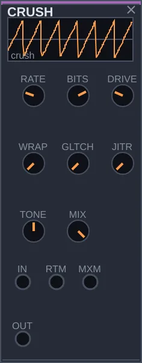
What it is
CRUSH dirties sound the digital way. It imitates the flaws of the first samplers and video games, and those of a bad connection: fewer samples per second, fewer volume steps, numbers that overflow and come back on the other side, stretches that stick or vanish. The result ranges from a slight roughness to a robot voice in pieces.
How to think about it
SHAPE distorts like an analog circuit, rounding and folding the wave. CRUSH breaks the sound into steps. Each control is a different kind of damage, and you can use just one or stack several. The glitches are random, but drawn from the patch's seed, so the same patch damages the sound the same way every time. With an envelope on the MXM input, a note starts clean and gradually degrades.
Controls
RATE: how many times per second the sound is read, from 100 to 24000. Low values make the sound stair-stepped and bring in ghost notes, the metallic fizz of 8-bit machines.
BITS: how many volume steps remain, from 1 to 16. At 16 you barely notice; at 1, everything becomes a square wave.
DRIVE: the gain before the damage, pushing the sound past its limits.
WRAP: what happens when the sound goes past the limit. At zero it is clipped; at maximum it reappears on the opposite side, which sounds much harsher, especially with DRIVE high.
GLTCH: the chance of a glitch: a stretch that sticks, a hole of silence, a stutter.
JITR: makes the reading irregular, and the pitch wavers a little, like a tired digital tape.
TONE: a simple filter on the output. To the left it darkens; to the right it leaves only the high fizz; in the middle it changes nothing.
MIX: the blend between the clean and the damaged sound. At zero the sound passes untouched.
Inputs: IN, the sound; RTM, to modulate RATE; MXM, to modulate MIX.
Try this
Connect the SAW output of an OSC to the IN input, and OUT to a MIXER input.
Lower RATE to about 4000 and BITS to 8. The sound gets grainy.
Raise GLTCH gradually and hear the glitches appear.
Lower MIX to zero and connect the ENV output of an ENVELOPE to MXM, with CLOCK on the envelope's GATE input. Each note starts clean and falls apart.
PARAMETRIC
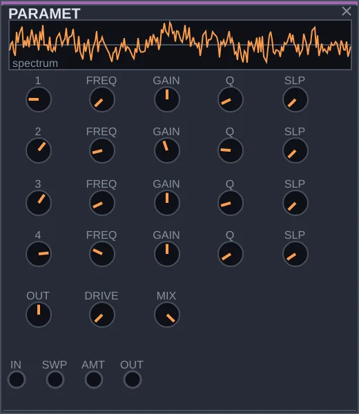
What it is
PARAMETRIC is a four-band equalizer, the studio tool for adjusting a tone with precision. Each band can cut lows or highs, boost or lower a narrow region, or raise or lower everything above or below a point.
How to think about it
FILTER is for playing: it resonates, moves, draws attention. PARAMETRIC is for the adjustments nobody should notice: removing a muddy low end, taming an annoying resonance, adding a little air at the end of the chain. It also has a gesture of its own. The SWP input moves all four bands together, and the whole equalizer curve slides across the spectrum without changing shape.
Controls
1, 2, 3, 4: the type of each band: off, low cut, low shelf, peak, high shelf, high cut. A shelf raises or lowers everything on one side of the chosen frequency; a peak acts only around it.
FREQ: the frequency each band acts on, from 20 Hz to 20 kHz.
GAIN: how much the band rises or falls, up to 24 dB either way. It applies to shelves and peaks; cuts don't use it.
Q: the width of the peak. High values affect a narrow region, low values a wide one.
SLP: the steepness of the cuts, from gentle to very steep.
OUT: the final volume, after the four bands.
DRIVE: light saturation on the output.
MIX: the blend between the original and the equalized sound.
Inputs: IN, the sound; SWP, to move the four bands together; AMT, to modulate the intensity.
Try this
Connect the OUT output of a MATTER to the IN input, and the PARAMETRIC's OUT to a MIXER input.
On band 1, leave the low cut and raise FREQ until the sound loses its weight. Back off a little and notice how even small changes are audible.
On band 3, set to peak, raise GAIN and Q and move FREQ slowly: you will find the sound's resonances.
Connect the BI output of a very slow FUNCTION to SWP. The whole tone wanders up and down.
GLIDE
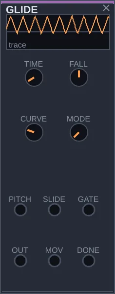
What it is
GLIDE makes one note slide into the next instead of jumping. It sits in the path of the pitch signal, between whatever chooses the notes, such as SEQUENCE or QUANTIZER, and the oscillator. That slide, called portamento, is what gives acid bass lines and legato leads their singing quality.
How to think about it
A slide that is always on gets tiresome fast. The interesting part is choosing when to slide, and GLIDE decides note by note: it can always slide, only when the SLIDE input is high, or only when notes are tied, that is, when the new note arrives before the previous one is released. The MOV and DONE outputs tell you when a slide is happening and when it ends, and can trigger other things.
Controls
TIME: how long it takes to rise an octave, from zero, a clean jump, to two seconds.
FALL: makes the way down faster or slower than the way up. In the middle they are equal.
CURVE: the shape of the slide. At zero the speed is constant and the note arrives exactly on time; at maximum it slows down as it approaches and takes longer to settle.
MODE: when to slide: always; only with SLIDE high, as on the TB-303 bass synthesizer; or only between tied notes, reading the GATE input.
Inputs: PITCH, the incoming pitch; SLIDE and GATE, which decide when to slide. Outputs: OUT, the shaped pitch; MOV, high during a slide; DONE, a pulse when it ends.
Try this
Build a line: the CLK output of CLOCK into the CLK input of a SEQUENCE, and the SAW output of an OSC into the MIXER.
Connect the SEQUENCE's PTCH to GLIDE's PITCH, and GLIDE's OUT to the OSC's 1V/O.
Raise TIME: the notes start sliding into one another.
Set MODE to the third position and connect the SEQUENCE's GATE to GLIDE's GATE. Now only tied notes slide.
CONTROL
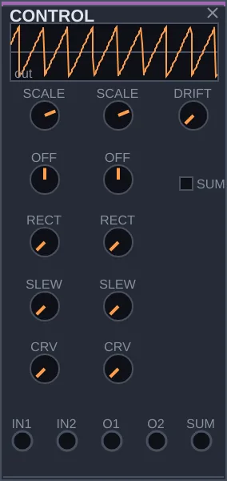
What it is
CONTROL adjusts control signals before they reach their destination. It can shrink, enlarge or invert a signal, shift it up or down, smooth its steps, and add two signals together. These are modest operations, but they show up in almost every patch that goes beyond the basics.
How to think about it
Sometimes a modulation has the right shape but the wrong size, or the wrong direction: an envelope that should close the filter instead of opening it, a wave that should swing only above zero. A cable's gain can make a signal smaller, but it cannot invert or shift it. CONTROL does all of that on one panel, with two identical channels and an output that combines them. With real audio on the input, it can also follow that sound's volume and turn it into a control signal, which is called an envelope follower.
Controls
SCALE: the size of the signal, on each channel. At 1 it passes unchanged; at 0.5, halved; negative, inverted. At zero only the OFF offset remains, and the channel becomes a manual control.
OFF: a value added to the signal, shifting it up or down.
RECT: folds the negative part of the signal upward. In the middle the negative part disappears; at maximum it is mirrored.
SLEW: smooths sudden changes, over up to two seconds. Steps become ramps.
CRV: the shape of that smoothing, from a straight ramp to a curve that slows down.
SUM: whether the SUM output adds the two channels or averages them.
DRIFT: a slow wander in the offsets, which takes the stiffness out of a fixed value.
Inputs: IN1 and IN2. Outputs: O1, O2 and SUM.
Try this
Build a voice: the SAW of an OSC into the IN input of a FILTER, and the FILTER's LO into the MIXER. Lower CUT.
Connect the ENV output of an ENVELOPE, played by CLOCK, to IN1 of CONTROL, and O1 to the FILTER's FC input. Each note opens the filter.
Set the first channel's SCALE to −1 and raise CUT. Now each note closes the filter.
Connect the BI output of a FUNCTION to IN2 and listen through the SUM output instead of O1: both modulations act together.
MODULATE 6 modules
ENVELOPE
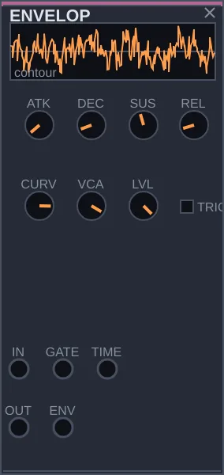
What it is
ENVELOPE shapes a note over time: how it starts, how it falls, how much it sustains and how it fades. It receives a pulse on the GATE input and draws a curve for each pulse. It has a volume control built in, so passing a sound through it is enough to hear notes instead of a continuous sound.
How to think about it
Sources sound all the time; ENVELOPE turns that flow into phrases. It has two uses that can happen at once. Through the IN input and OUT output, it articulates the sound that passes through. Through the ENV output, it hands you the curve itself, which you can send to open a filter, change a tone or dose an effect. The four stages of the curve have names that appear on every synthesizer: attack, decay, sustain and release, hence ADSR.
Controls
ATK: the attack, the time the note takes to reach its peak after the pulse. Short sounds percussive; long, like a bow coming in slowly.
DEC: the decay, the time it takes to fall from the peak down to the SUS level.
SUS: the level the note holds while the pulse stays high. At zero there is no sustain and the note sounds plucked.
REL: the time the note takes to fade after the pulse ends.
CURVE: the shape of the curves, from softer to punchier, with the attack felt earlier.
TRIG: in one position, the note holds as long as the pulse lasts; in the other, each pulse fires the whole curve without waiting.
VCA: how much the built-in volume acts on the sound passing through. At zero the sound goes through unchanged and only the ENV output matters.
LVL: the output volume.
Inputs: IN, the sound; GATE, the pulse that fires the note; TIME, to speed up or slow down all stages. Outputs: OUT, the articulated sound; ENV, the curve.
Try this
Connect the SAW output of an OSC to the IN input, OUT to a MIXER input, and the EUC output of CLOCK to GATE. You hear notes.
Raise ATK and hear each note come in slowly. Bring it back and play with DEC to make the notes short or long.
Put a FILTER between the OSC and the ENVELOPE, with CUT low, and connect ENV to the filter's FC input. Now each note also opens the tone.
FUNCTION
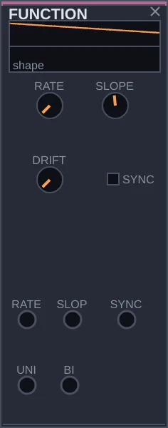
What it is
FUNCTION generates a ramp that rises and falls without stopping. Slowly, it moves other controls, which is called an LFO, a low-frequency oscillator; fast, it becomes an audible sound; triggered by a pulse, it works as a simple envelope. It is the most used source of movement in Rasgo Modular.
How to think about it
Envelope, LFO and oscillator are the same thing at different speeds, and FUNCTION covers all of them, from one cycle every hundred seconds to thousands per second. When a guide tells you to connect an LFO somewhere, it almost always means a slow FUNCTION. The shape goes from a falling ramp to a rising one, passing through a triangle, and the two outputs give the same shape on different scales: UNI only above zero, BI above and below.
Controls
RATE: the speed, from 0.01 to 12000 cycles per second.
SLOPE: the shape. At one end it rises suddenly and falls slowly; in the middle, a triangle; at the other end, it rises slowly and drops suddenly.
DRIFT: varies the speed gradually, so the movement doesn't sound like a metronome.
SYNC: enables the SYNC input, so each pulse restarts the ramp.
Inputs: RATE and SLOPE, to modulate those controls; SYNC, the pulse that restarts. Outputs: UNI and BI.
Try this
Build a voice: the SAW of an OSC into the IN input of a FILTER, the FILTER's LO into the MIXER. Lower CUT.
Connect FUNCTION's BI to the FILTER's FC input, with RATE low. The tone opens and closes slowly.
Raise RATE to about 5 Hz and connect BI to the OSC's FM input, with the OSC's FM knob very low. The pitch trembles, a vibrato.
Raise RATE into the audible range and connect BI straight to the MIXER: FUNCTION itself becomes sound.
STAGES
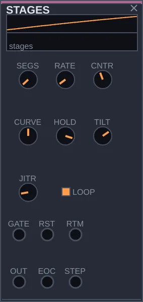
What it is
STAGES draws a curve made of several linked segments, from two to eight. Depending on the settings, that curve becomes a multi-stage envelope, a slow movement that never repeats exactly, a sequence of stepped values, or even an oddly shaped sound.
How to think about it
FUNCTION makes a single ramp, and ENVELOPE the usual four stages. STAGES makes compound shapes, and you don't draw point by point: a few controls shape the whole drawing at once. The control that changes its character most is HOLD. At zero the segments are ramps and the result is continuous movement; at maximum each segment jumps and holds, and STAGES starts working as a sequencer. With LOOP on, the shape repeats by itself; off, it runs once for each pulse on GATE.
Controls
SEGS: how many segments the shape has, from 2 to 8.
RATE: the speed of one full cycle, when LOOP is on.
CNTR: the layout of the levels: a rising staircase, an arch, or a falling staircase.
CURVE: how each segment goes from one level to the next: fast at first, in a straight line, or slow at first.
HOLD: at zero, smooth ramps; at maximum, steps that jump and hold.
TILT: makes the first segments longer than the last ones, or the other way round.
JITR: makes levels and durations vary slightly on each cycle, always the same for the same seed.
LOOP: on, the shape repeats; off, it runs once per pulse.
Inputs: GATE, the pulse that fires it; RST, to go back to the start; RTM, to modulate the speed. Outputs: OUT, the curve; EOC, a pulse at the end of each cycle; STEP, a pulse on each segment.
Try this
Build a voice: the SAW of an OSC into the IN input of a FILTER, the FILTER's LO into the MIXER. Lower CUT.
Connect STAGES's OUT to the FILTER's FC input, with SEGS at 6. The tone travels along a shape that comes and goes.
Move CNTR and TILT and hear the drawing change.
Turn HOLD all the way up and SEGS to 8. Connect OUT to the CV input of a QUANTIZER and the QUANTIZER's PTCH to the OSC's 1V/O: STAGES now plays a melody.
DRIFT
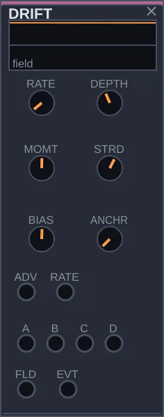
What it is
DRIFT produces very slow movements, on the scale of minutes. Connected to a few controls in a patch, it makes the music change gradually on its own: the tone at thirty seconds is different from the tone at four minutes, with no jumps and no return to the same point.
How to think about it
A patch nobody is touching tends to go round in circles after a while. DRIFT is the layer of slow development. Inside there is a single value wandering, and the four outputs A, B, C and D are versions of that same walk, each with its own weight. So they tell the same story from different angles: when one rises, the others tend to rise too. The walk also has inertia: once it picks a direction, it tends to keep it for a while.
Controls
RATE: the pace of the walk, from one step per second to one every eight minutes or so.
DEPTH: the reach, how far the walk can stray from its resting point.
MOMT: the inertia. High, the path is smooth and keeps a direction; low, it changes course constantly.
STRD: at zero the four outputs move almost together; at maximum each goes its own way.
ANCHR: the memory. At zero the walk never returns; high, it tends to come back to places it has been, which gives the piece something like recurring themes.
BIAS: moves the resting point up or down.
Inputs: ADV, a pulse that forces a step; RATE, to modulate the speed. Outputs: A, B, C and D, the four aspects of the walk; FLD, the unweighted walk; EVT, a pulse on each step.
Try this
Build any voice that goes through a FILTER and a SPACE before the MIXER.
Connect A to the FILTER's FC input and B to the SPACE's FBK input. Raise DEPTH.
Let it play for a few minutes. The tone and the space change together, unhurried.
To follow the shape of the music, connect the EOS output of a SEQUENCE to ADV: the walk takes a step at the end of each phrase.
CHAOS
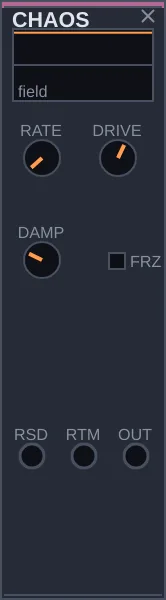
What it is
CHAOS generates unpredictable movement from a simulated physical system: something like a ball rolling between two valleys, sometimes settling in one, sometimes jumping to the other. You can't predict when it will jump, but with the same seed everything repeats the same way.
How to think about it
Other modules draw random values, like TURING and DECISION, or wander slowly, like DRIFT. CHAOS behaves in its own way: it spends a while circling one region and then suddenly switches to another. On a filter, that gives a tone that hesitates and then leaps; on a melody, phrases that stay in one register and then move abruptly. At high speeds it becomes a sound texture itself.
Controls
RATE: the speed of the movement, from 0.02 to 400 cycles per second. Slow to move controls; fast to listen to directly.
DRIVE: the force pushing the ball between the valleys. Higher means bigger, more frequent jumps.
DAMP: the friction. High, the ball settles in a valley and nearly stops; low, it swings widely and jumps from side to side.
FRZ: freezes the movement at its current value.
Inputs: RSD, a pulse that gives a fresh push; RTM, to modulate the speed. Output: OUT.
Try this
Build a voice: the SAW of an OSC into the IN input of a FILTER, the FILTER's LO into the MIXER.
Connect CHAOS's OUT to the FILTER's FC input. Set RATE around 0.3, DRIVE high and DAMP low.
Hear the tone stay in one region for a while and then leap to another.
Also connect CHAOS's OUT to the CV input of a QUANTIZER, and its PTCH to the OSC's 1V/O. Now the melody changes register along with the tone.
SH
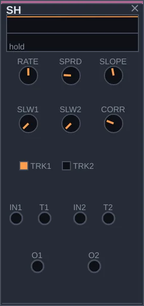
What it is
SH, short for sample and hold, captures the value of a signal at the moment of a pulse and holds it until the next pulse. With nothing on its input, it draws a new random value on each pulse. It is the traditional way of turning chance into steps: each pulse, a new note, a new tone. SH has two channels.
How to think about it
Two independent draws have nothing to do with each other, and sometimes that is what you want. But a melody often sounds better when the tone follows the note without copying it. The CORR control sets exactly that relationship between the two channels: from mirrored, one rising as the other falls, to independent, to twins that draw the same value. The slew controls turn the steps into glides.
Controls
RATE: the internal draw rate, from 0.02 to 40 times per second. It only applies to a channel with no pulse on T1 or T2.
SLW1, SLW2: how long each channel takes to glide to the new value. At zero it jumps instantly.
SLOPE: makes the way up faster than the way down, or the other way round.
TRK1, TRK2: instead of capturing only at the moment of the pulse, the channel follows the input while the pulse is high and holds when it falls.
SPRD: changes the kind of draw, making small variations more frequent than large ones.
CORR: the relationship between the two channels' draws: mirrored, independent or identical. It only applies to channels with nothing on their input.
Inputs: IN1 and IN2, the signals to capture; T1 and T2, the pulses. Outputs: O1 and O2.
Try this
Build a voice: the SAW of an OSC into the IN input of a FILTER, the FILTER's LO into the MIXER.
Connect the CLK output of CLOCK to T1 and to T2.
Connect O1 to the CV input of a QUANTIZER, the QUANTIZER's PTCH to the OSC's 1V/O, and O2 to the FILTER's FC input. Each pulse brings a note and a tone.
Turn CORR from one end to the other. On one side, high notes come out dark; in the middle, no relationship; on the other, high notes come out bright.
TIME 5 modules
CLOCK
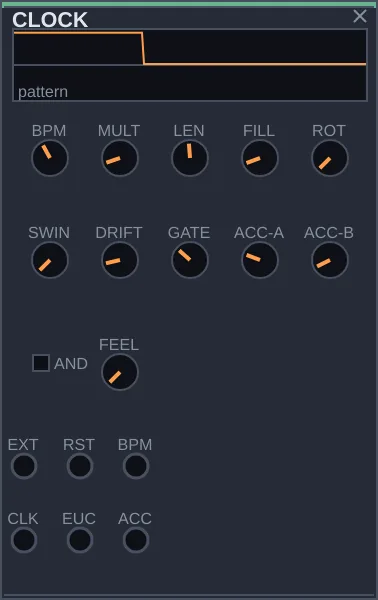
What it is
CLOCK is the patch's timekeeper. It sends regular pulses at the tempo you choose and builds rhythms and accents from them. Almost every patch starts with it: its pulses advance the sequence, fire the envelopes and play the drums.
How to think about it
Instead of programming beat by beat, you describe the rhythm with two numbers. LEN says how many steps the cycle has, FILL says how many of them play, and CLOCK spreads those hits as evenly as possible. This method, called Euclidean rhythm, reproduces many traditional patterns from around the world: 3 in 8 gives the Cuban tresillo, 5 in 8 the cinquillo. The CLK output pulses on every step; EUC only on the chosen steps; ACC marks the accents.
Controls
BPM: the tempo, from 20 to 300 beats per minute.
MULT: how many steps fit in one beat.
LEN: the length of the cycle, from 1 to 32 steps.
FILL: how many steps of the cycle play on the EUC output. Few make the rhythm sparse; close to LEN, almost continuous.
ROT: rotates the pattern so it starts from another point. The density is the same, but the feel changes.
SWING: delays every other step, giving it a lilt.
DRIFT: lets the tempo vary slightly, like a drummer who pushes and pulls.
GATE: how long each pulse stays on, within its step.
ACC-A, ACC-B: accents fall on steps that are multiples of these numbers. With 4 and 3, for instance, the accents form a three-against-four pattern.
AND: decides whether an accent needs both numbers at once or just one of them.
FEEL: how many parts each beat is divided into: two, three (triplets), five, seven, nine, eleven, or a division drawn at random on each step.
Inputs: EXT, to follow outside pulses; RST, to go back to the start; BPM, to modulate the tempo. Outputs: CLK, EUC and ACC.
Try this
Connect EUC to the GATE input of a DRUM, and the DRUM's OUT to a MIXER input.
Set LEN to 8 and move FILL from 1 to 8. At 3 and at 5 you will hear familiar patterns.
Turn ROT and hear the same pattern start from somewhere else.
Connect ACC to the DRUM's ACC input and change ACC-A and ACC-B to hear the accents move around.
LOGIC
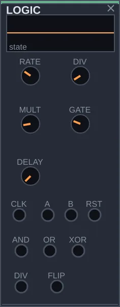
What it is
LOGIC combines and transforms rhythms. It divides a pulse to create slower rhythms, compares two rhythms to make a third, and flips a state on each pulse. These are simple operations, the kind used in digital circuits, applied to musical time.
How to think about it
An interesting rhythm is rarely a straight pulse. It is usually the relationship between two: one playing at half speed, one that only plays when another plays too, one that plays when either plays but never both together. LOGIC sits between pulse sources, such as CLOCK, TURING and SEQUENCE, and the modules they trigger. With nothing on the CLK input, it uses a clock of its own.
Controls
RATE: the internal clock, used when nothing reaches CLK.
DIV: divides the pulse. At 2, the DIV output pulses once every two pulses; at 3, once every three.
MULT: adds in-between pulses within each period.
GATE: how long the DIV output's pulse stays on.
DELAY: delays the DIV output's pulse by up to 200 milliseconds.
Inputs: CLK, the pulse to divide; A and B, the two rhythms to compare; RST, to reset. Outputs: DIV, the divided pulse; AND, when A and B are on together; OR, when either is; XOR, when only one of them is; FLIP, which changes state on each pulse at A.
Try this
Connect the CLK output of CLOCK to LOGIC's CLK input and DIV to the GATE input of a DRUM connected to the MIXER. Change DIV to hear the pulse slow down.
Connect CLOCK's EUC to A, and the PLS output of a TURING to B.
Move the drum to the XOR output and then to AND. Hear how each combination makes a different rhythm out of the same two.
TURING
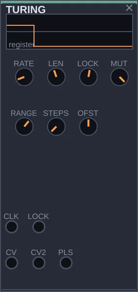
What it is
TURING invents melodies by chance and lets you keep the ones you like. It holds a loop of a few values that turns on each pulse; on each turn, every value may stay or be swapped for another. With the LOCK control you decide how much the loop changes, from total chance to a fixed repetition.
How to think about it
Here you compose by choosing with your ears, not by writing note by note. Leave LOCK in the middle, listen to the melody transform and, when something good comes up, turn LOCK all the way: the loop locks and repeats. To vary it again, loosen it a little. The name honors the Turing Machine module by Music Thing Modular, which popularized the idea. SEQUENCE plays a written phrase; TURING lets phrases emerge and settle.
Controls
RATE: the internal clock, used when nothing reaches CLK.
LEN: the length of the loop, from 2 to 16 steps.
LOCK: the chance of the loop staying the same. At zero everything is drawn again; at maximum the phrase locks and repeats.
MUT: when a value changes, how much it changes. Low, small variations of what was there; high, a fresh draw.
RANGE: the span of the output values, that is, the size of the melody's leaps.
STEPS: divides the output into steps. At 1 the values are continuous.
OFST: the center of the values, which moves the melody's register up or down.
Inputs: CLK, the pulse that turns the loop; LOCK, to modulate the locking. Outputs: CV, the melody; CV2, another reading of the same loop, related but different; PLS, a rhythm taken from the same loop.
Try this
Connect the CLK output of CLOCK to TURING's CLK input.
Connect CV to the CV input of a QUANTIZER, and the QUANTIZER's PTCH to the 1V/O of an OSC running through an ENVELOPE to the MIXER. Connect PLS to the envelope's GATE input.
With LOCK in the middle, hear the melody change little by little.
When you like what you hear, turn LOCK all the way up. The phrase stays.
SEQUENCE
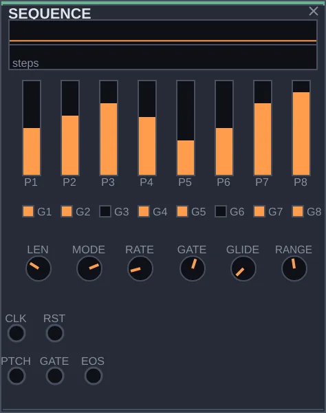
What it is
SEQUENCE plays a short phrase you write: up to eight notes, each with its own pitch, each on or silent. On every pulse at the CLK input it moves one step, sending the pitch out of the PTCH output and the note's pulse out of the GATE output. It is for a bass line, a riff, a repeating figure.
How to think about it
TURING lets a phrase emerge from chance; SEQUENCE starts from a phrase you decide. The variation comes from the way it reads: forwards, backwards, back and forth, in random order, or wandering from one step to its neighbor. The same eight-note phrase yields a lot just by changing MODE and LEN. To make the pitches land on the notes of a scale, run PTCH through a QUANTIZER before the oscillator.
Controls
LEN: how many of the eight steps are in the phrase.
MODE: the reading order: forwards, backwards, back and forth, random, or wandering step by step.
RATE: the internal clock, used when nothing reaches CLK.
GATE: how long each note stays on within its step. Short sounds detached; long, connected.
GLIDE: makes the pitch slide from one note to the next.
RANGE: how many octaves the eight values cover, up to two.
P1 to P8: the pitch of each step.
G1 to G8: turns each step on or silences it.
Inputs: CLK, the pulse that advances; RST, to go back to the first step. Outputs: PTCH, the pitch; GATE, the note's pulse; EOS, a pulse at the end of each phrase.
Try this
Connect the CLK output of CLOCK to SEQUENCE's CLK.
Connect PTCH to the CV input of a QUANTIZER, and the QUANTIZER's PTCH to the 1V/O of an OSC. Run the OSC through an ENVELOPE to the MIXER and connect SEQUENCE's GATE to the envelope's GATE.
Adjust P1 to P8 until you like the phrase, and turn some steps off with G1 to G8.
Change MODE and hear the same phrase read in other ways.
TRIGSEQ
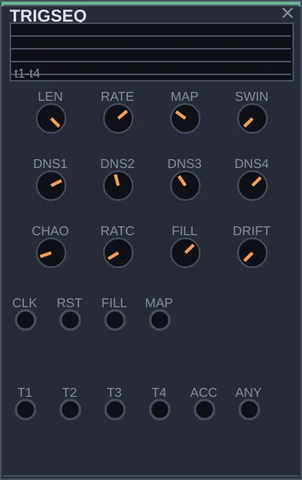
What it is
TRIGSEQ generates drum rhythms on four lanes at once, meant for kick, snare, hi-hat and an extra percussion. You don't mark the hits one by one: you choose a style, set the density of each lane, and it creates the pattern. When it loads, it is already playing.
How to think about it
Four CLOCK modules, one per instrument, would produce lanes that don't talk to each other. In TRIGSEQ all four come from the same style, so they fit together like a kit played by a person. The MAP control moves through four characters: straight, as in rock and house; broken, as in breakbeat; swung, as in hip-hop; and sparse, as in dub. Turned slowly, the groove changes personality without losing the pulse.
Controls
LEN: how many of the 16 steps are in the cycle.
RATE: the internal clock, used when nothing reaches CLK.
MAP: the style, from straight to sparse.
DNS1, DNS2, DNS3, DNS4: the density of each lane. Higher, more hits.
SWING: delays every other step, giving it a lilt.
CHAOS: the chance of ghost hits appearing or expected hits going missing, which makes the rhythm less mechanical.
RATCH: the chance of a hit becoming a quick burst of repeats, a roll.
FILL: how much the FILL input raises the densities, for fills.
DRIFT: lets the style and densities vary gradually, and the groove evolves on its own.
Inputs: CLK, the pulse; RST, to go back to the start; FILL, a signal that triggers the fill; MAP, to modulate the style. Outputs: T1 to T4, the four lanes; ACC, the accents; ANY, a pulse whenever any lane plays.
Try this
Connect the CLK output of CLOCK to TRIGSEQ's CLK input.
Put three DRUM modules in the rack. Connect T1, T2 and T3 to the GATE input of each one, and their OUT outputs to the MIXER.
Adjust TONE and DECAY on each DRUM so they sound like kick, snare and hi-hat.
Turn MAP slowly and hear the groove change style. Then play with the densities.
DECISION 5 modules
QUANTIZER
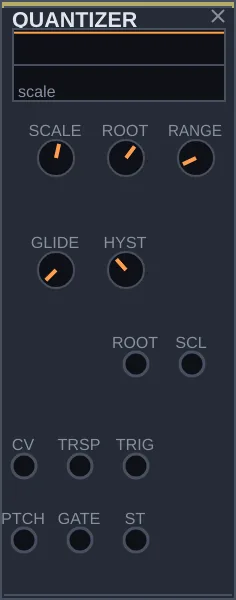
What it is
QUANTIZER pins a continuous signal to the notes of a scale. A value that rises and falls freely, coming from a TURING, an SH or a CHAOS, comes out as a sequence of in-tune notes. In most patches, it is what turns chance into melody.
How to think about it
Control signals vary continuously, and musical notes don't. Without a quantizer, a melody generated by chance falls between the notes and sounds out of tune. QUANTIZER rounds each value to the nearest note of the chosen scale. With a pulse on the TRIG input, it only changes note on the pulse, and the melody gains a rhythm. The GATE output pulses whenever the note actually changes, which is handy for firing an envelope only on new notes.
Controls
SCALE: the scale, out of twelve: chromatic, major, natural minor, Dorian, Phrygian dominant, Lydian, melodic minor, minor pentatonic, major pentatonic, hirajoshi, whole tone, and octaves only.
ROOT: the tonic, the scale's starting note, from C to B.
RANGE: how many octaves the input signal covers, from 1 to 6. More octaves, bigger leaps.
GLIDE: makes the pitch slide from one note to the next.
HYST: a tolerance margin. With an unsteady signal, the note doesn't keep flipping between two neighbors.
Inputs: CV, the signal to quantize; TRSP, to transpose before quantizing; TRIG, the pulse that decides when to change note. Outputs: PTCH, the pitch; GATE, a pulse on each new note; ST, the note in semitones.
Try this
Connect the CV output of a TURING to QUANTIZER's CV input, and the CLK output of CLOCK to the TURING's CLK input.
Connect PTCH to the 1V/O of an OSC, and the OSC's SIN output to an ENVELOPE connected to the MIXER. Connect QUANTIZER's GATE to the envelope's GATE.
Change SCALE and hear the same sequence of values become another melody. Change ROOT to transpose.
HARMONY
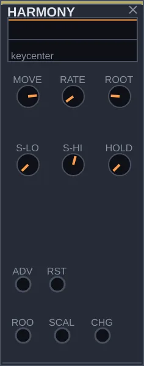
What it is
HARMONY decides which keys the music passes through. From time to time, or on each pulse at the ADV input, it picks a new tonal center, following one of six moves that jazz and film musicians have used for decades. The ROOT output gives the new tonic on the same pitch scale the oscillators understand.
How to think about it
QUANTIZER keeps the melody in tune, but always in the same key. Music tends to travel, and each style travels its own way. The MOVE control picks the route: Coltrane, which leaps a major third on each change and closes a cycle of three keys, as in Giant Steps; tritone substitution, which reaches the next key by an unexpected path; chromatic mediant, third-related shifts with a film-score feel; modal interchange, which keeps the tonic and changes the mode; modal jazz, which hardly ever moves; and backdoor, which rises a whole step.
In this version, the way to hear the changes is to add the ROOT output to the melody before the oscillator. Each input accepts only one cable, so the sum goes through a MATRIX, and the whole melody transposes to the new center. Scale changes, from the SCALE output, can't yet reach QUANTIZER by cable.
Controls
MOVE: the kind of route, among the six described above.
RATE: the pace of the changes, when nothing reaches ADV. It ranges from one change every few minutes to two per second.
ROOT: the starting tonic, which the module returns to when it gets a pulse on RST.
S-LO, S-HI: the range of scales that can be drawn on each change.
HOLD: the chance of a change being skipped, which lengthens some sections.
Inputs: ADV, the pulse that asks for a change; RST, to go back to the start. Outputs: ROOT, the tonic as a pitch; SCALE, the scale number; CHG, a pulse on each change.
Try this
Build the QUANTIZER melody: the CV output of a TURING, driven by CLOCK, into QUANTIZER's CV input, and an OSC running through an ENVELOPE to the MIXER.
Connect QUANTIZER's PTCH to IN1 of a MATRIX, HARMONY's ROOT to IN2, and the MATRIX's OUT1 to the OSC's 1V/O. On the MATRIX, set cell 21 to 1: OUT1 is now the melody plus the tonic.
Set MOVE to the first position, Coltrane, and raise RATE. On each change the melody jumps to another center, in cycles of three.
Connect CHG to the ADV input of a DRIFT so the rest of the patch also changes section on each change.
ABACUS
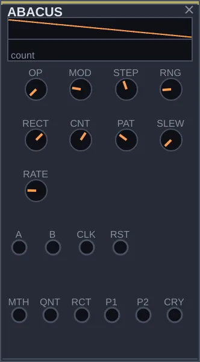
What it is
ABACUS treats signals as numbers. It does arithmetic between two inputs, counts pulses and turns the count into rhythms and staircases, and cuts or mirrors the negative part of a signal. Even with nothing on inputs A and B, its internal counter generates patterns you can use as rhythm and melody.
How to think about it
Counting is the simplest way to create a pattern. A counter that goes from 0 to 7 and starts over, looked at bit by bit, produces syncopated rhythms without any sequencer: each bit turns on and off at a different speed. The QNT output turns the count into a staircase of values, good to send to a QUANTIZER. And the RCT output, the rectifier, is useful on its own whenever you need the positive half of a signal or its absolute value.
Controls
OP: the operation between A and B that comes out of MTH: addition, subtraction, multiplication, remainder, or four bitwise operations.
MOD: how high the counter counts before starting over, from 2 to 32.
STEP: how many steps the QNT output is divided into.
RNG: the size of the value window used by the MTH, QNT and RCT outputs.
RECT: the rectifier mode: positive part only, negative part only, both mirrored upward, or just the sign, plus or minus.
CNT: how far the counter moves on each pulse. Negative counts backwards.
PAT: which bit of the counter becomes the P1 output. Low bits switch fast; high bits, slowly.
SLEW: smooths the MTH and QNT outputs.
RATE: the internal clock, used when nothing reaches CLK.
Inputs: A and B, the numbers for the operation; CLK, the pulse that counts; RST, to reset. Outputs: MTH, the result; QNT, the staircase; RCT, the rectifier; P1 and P2, two rhythms taken from the counter; CRY, a pulse each time the count starts over.
Try this
Connect the CLK output of CLOCK to ABACUS's CLK input, with MOD at 8.
Connect P1, P2 and CRY to the GATE inputs of three DRUM modules connected to the MIXER. You hear a syncopated rhythm that comes round every eight pulses.
Turn PAT and hear P1 get faster or slower.
Connect QNT to the CV input of a QUANTIZER, and PTCH to the 1V/O of an OSC connected to the MIXER. The count becomes a stepwise melody.
DECISION
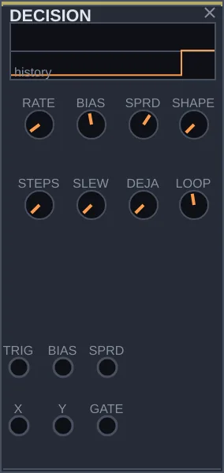
What it is
DECISION is the patch's source of choices. On each pulse it decides whether or not to fire a signal on the GATE output, and draws two values on the X and Y outputs. You control the chance of firing, the size and shape of the draws, and how much it remembers of what it has done.
How to think about it
A slow wave is too predictable, and pure noise has no shape. DECISION sits in between: chance with rules. BIAS decides whether something happens almost always or only now and then. SHAPE decides whether the values spread evenly or cluster near the center, with large leaps being rare. DEJA is the memory: instead of drawing again, it replays the last steps, and the music gains repetitions, like a theme coming back.
Controls
RATE: the internal clock, used when nothing reaches TRIG.
BIAS: the chance of GATE firing on each pulse. At zero, never; at maximum, always.
SPRD: the reach of the draws on X and Y. Low, values near the center; high, the full range.
SHAPE: at zero all values are equally likely; at maximum, values near the center come up much more often.
STEPS: divides the draws into steps. At 1 they are continuous.
SLEW: makes each new value glide from the previous one.
DEJA: the chance of repeating a value from memory instead of drawing a new one. High, the same phrase tends to repeat.
LOOP: the size of that memory, from 1 to 16 steps.
Inputs: TRIG, the pulse for each decision; BIAS and SPRD, to modulate those controls. Outputs: X and Y, the drawn values; GATE, the decision.
Try this
Connect the EUC output of CLOCK to TRIG.
Connect X to the CV input of a QUANTIZER, PTCH to the 1V/O of an OSC, and the OSC through an ENVELOPE to the MIXER. Connect DECISION's GATE to the envelope's GATE.
Lower BIAS and hear the notes thin out, only now and then.
Raise DEJA gradually. The melody starts repeating itself, and with DEJA at maximum it gets caught in a loop of LOOP steps.
BOXCAR
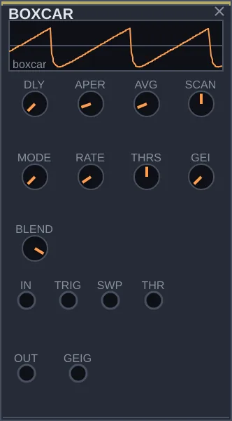
What it is
BOXCAR measures a signal in short windows and averages many measurements in a row. The technique comes from laboratory instruments used to find a weak signal buried in noise. In a patch, it serves as a very steady volume follower, a waveform reconstructor, and an oscillator made from what it has measured.
How to think about it
SH captures an instant; BOXCAR captures a slice of time and averages it. On each pulse at TRIG, it opens a window at some point in the cycle, measures, and adds that measurement to the previous ones. Whatever repeats identically on every cycle firms up, and whatever is random cancels out. MODE chooses what to do with the result: output just the average, as a control signal that follows the sound slowly; play back the reconstructed cycle; or replay that cycle on its own, like an oscillator. It also has a separate output, GEIG, with irregular pulses like those of a Geiger counter.
Controls
DLY: where in the cycle the window opens.
APER: the width of the window. Narrow, it measures almost an instant; wide, it averages a stretch.
AVG: how many measurements go into the average, from 1 to 64. More measurements, less noise and a slower response.
SCAN: makes the window travel through the cycle by itself, in either direction. At zero it stays put.
MODE: follower, reconstruction or oscillator.
RATE: the internal clock, when nothing reaches TRIG, and the replay speed in oscillator mode.
THRSH: the level the signal must cross to trigger a measurement, when nothing reaches TRIG.
GEI: the density of the pulses on the GEIG output. At zero it is silent.
BLEND: the blend between the original and the processed signal.
Inputs: IN, the signal to measure; TRIG, the pulse for each measurement; SWP, to move the window; THR, to modulate the threshold. Outputs: OUT and GEIG.
Try this
Connect GEIG to the GATE input of a DRUM connected to the MIXER and raise GEI. You hear hits at unpredictable moments.
Now connect a voice that plays notes, such as an OSC running through an ENVELOPE, to the IN input, with MODE in the first position and APER wide.
Connect OUT to the CV1 input of a VCA that controls another sound. The second sound now follows the voice's volume, without trembling.
ROUTE 4 modules
SWITCH
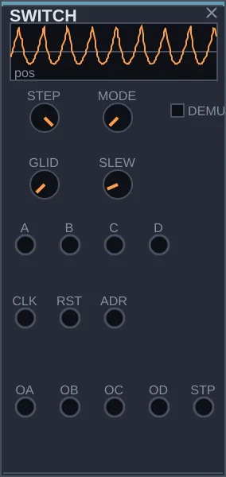
What it is
SWITCH is a selector switch operated by the patch. It can pick one of four sources and send it to one output, or take a single source and send it to one of four outputs. The switch happens on each pulse, in order or at random, or follows a control signal.
How to think about it
In a patch that transforms itself, changing material matters as much as changing notes: the same melody played now by an oscillator, now by a string; the filter fed now by noise, now by a chord. Without SWITCH, that means swapping cables by hand. With DEMUX off, it chooses among A, B, C and D and delivers to OA. On, it takes what arrives at A and sends it to one of the four outputs, OA, OB, OC or OD.
Controls
STEP: how many positions the switch moves through, from 2 to 4.
MODE: how the position changes: forwards, back and forth, at random, or only from the signal on the ADR input.
DEMUX: off, four inputs to one output; on, one input to four outputs.
GLID: a gradual transition between positions, in which the two sources blend for a moment. At zero the cut is clean.
SLEW: smooths the switch to avoid clicks. Best to always leave a little.
Inputs: A, B, C and D, the sources; CLK, the pulse that advances; RST, to go back to the first position; ADR, to choose the position with a signal. Outputs: OA, OB, OC and OD; STP, the current position as a control signal.
Try this
Connect the SAW output of an OSC to A, and the OUT of a MATTER, played by CLOCK, to B. Connect OA to a MIXER input.
Set STEP to 2 and connect the DIV output of a LOGIC to CLK, with CLOCK's CLK output on LOGIC's CLK input and DIV at 4.
Every four pulses the sound switches source. Raise GLID so the switches blend.
MATRIX
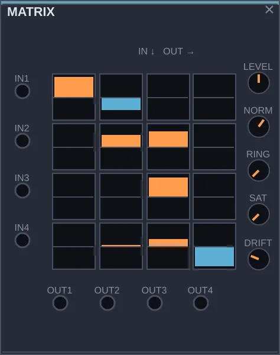
What it is
MATRIX connects four inputs to four outputs along every possible path at once. The panel has a grid of 16 cells, and each one decides how much of an input goes to an output. It is a distribution board: instead of one cable per connection, every connection is there, each with its own level.
How to think about it
It is useful when you think in blocks: a little of this modulation everywhere, or swap the source of everything at once. Connect four movement sources to the inputs and four destinations to the outputs, and the grid becomes a modulation panel. With audio, it becomes a four-output mixer. With DRIFT, the 16 cells change slowly on their own, and the web of connections evolves with the music.
Controls
The grid: each cell has two digits, the input and then the output. Cell 23, for instance, decides how much of input 2 goes to output 3. Drag vertically to adjust; negative values invert the signal.
LEVEL: the overall level of the four outputs.
NORM: balances the level when several cells feeding one output are open, so the sum doesn't grow too large.
RING: instead of adding the inputs on an output, multiplies them, which produces metallic tones with audio signals.
SAT: saturation that keeps the level in check when you feed the matrix back into itself.
DRIFT: makes the 16 cells wander slowly.
Inputs: IN1 to IN4. Outputs: OUT1 to OUT4.
Try this
Connect the BI output of a FUNCTION to IN1 and the A output of a DRIFT to IN2.
Build a voice with FILTER and SPACE. Connect OUT1 to the FILTER's FC input and OUT2 to the SPACE's FBK input.
Open and close cells 11, 12, 21 and 22 and hear each source move from one destination to the other.
Raise DRIFT and let the matrix rearrange itself.
MULT
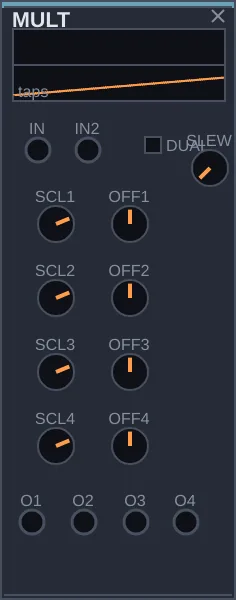
What it is
MULT takes a control signal and distributes it to four outputs, each with its own size and offset adjustment. With nothing on its input, it becomes a bank of four fixed values you set by hand.
How to think about it
In Rasgo Modular, one output can already go to several destinations with ordinary cables. MULT is for when each destination needs a different dose: the same envelope opening a filter fully, lowering another voice's volume a little, nudging an effect. One input, four adjusted versions. With DUAL on, it splits into two distributors with two outputs each.
Controls
DUAL: off, IN goes to all four outputs; on, IN goes to O1 and O2, and IN2 goes to O3 and O4.
SCL1, SCL2, SCL3, SCL4: the size of the signal on each output. At 1 it passes unchanged; below 1, smaller; above, larger; negative, inverted. At zero only the offset remains.
OFF1, OFF2, OFF3, OFF4: a value added to each output. With nothing on the input, it is the output's value.
SLEW: smooths all four outputs together.
Inputs: IN and IN2. Outputs: O1 to O4.
Try this
Build two voices, each with its own FILTER, going through the MIXER.
Connect the ENV output of an ENVELOPE, played by CLOCK, to MULT's IN. Connect O1 to the first FILTER's FC and O2 to the second's FC.
Leave SCL1 at 1 and set SCL2 to a negative value. On each note, one filter opens and the other closes.
PLANAR
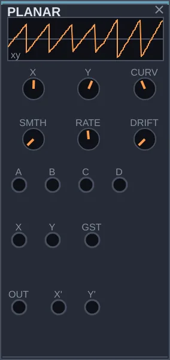
What it is
PLANAR blends four sounds placed at the corners of a square. A point moves inside the square, and the output is a mix of the four, weighted by the point's distance from each corner. As the point moves slowly, the tone morphs from one sound into another. The technique is called vector synthesis.
How to think about it
Think of a joystick: X moves the point left and right, Y up and down. You can move it by hand, with two slow waves, or with a DRIFT, and the point traces figures. The position also comes out of the X' and Y' outputs, so the same movement can drive other controls in the patch. With a long pulse on the GST input, PLANAR records the path you make with the X and Y knobs and then repeats it endlessly.
Controls
X, Y: the position of the point in the square. Signals on the inputs of the same name add to these values.
CURVE: the way of blending. At one end the blend is linear, good for control signals; at the other it keeps the volume constant, so the sound doesn't dip when the point is in the middle.
SMTH: makes the point glide to its new position instead of jumping.
RATE: the speed at which the recorded gesture repeats and of DRIFT's wander.
DRIFT: makes the point wander around the square on its own.
Inputs: A, B, C and D, the four sounds; X and Y, to move the point; GST, to record and repeat a gesture. Outputs: OUT, the blend; X' and Y', the position of the point.
Try this
Connect four different sources to A, B, C and D: for example the SAW of an OSC, the OUT of a WAVETABLE, the OUT of CHORD and the PNK of a NOISE. Connect PLANAR's OUT to the MIXER.
Move X and Y by hand and hear the sound pass from one corner to another.
Connect the BI outputs of two slow FUNCTION modules, at different speeds, to the X and Y inputs. The point traces a figure and the tone keeps changing.
Connect Y' to the FC input of a FILTER in the sound's path: the filter follows the movement.
SPACE 7 modules
SPACE
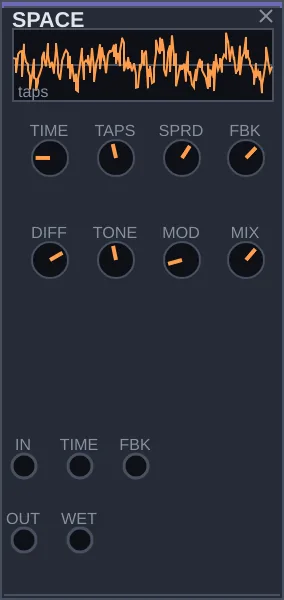
What it is
SPACE puts the sound in a place. It repeats the sound with a delay, once or several times, and can spread those repeats until they merge into a continuous tail. With a few adjustments it goes from a crisp echo to a wide room.
How to think about it
Echo and reverb are two ends of the same road. A single delay, with nothing else, is an echo. Add repeats, feed them back to the input and scramble them, and the ear stops telling them apart: it hears a room. SPACE travels that whole road. Its place is near the end of the patch, before MIXER or MASTER, and several voices going through the same SPACE sound as if they were in the same room.
Controls
TIME: the delay time, from 2 milliseconds to 2 seconds. Turning it while sound is passing makes the space seem to change size.
TAPS: how many repeats come out on each pass, from 1 to 8.
SPRD: spreads those repeats in time. At zero they come out together, as a single echo; at maximum they form a rhythmic pattern.
FBK: how much of the repeated sound goes back to be repeated again. More means more repeats and a longer tail.
DIFF: scrambles the repeats until they can no longer be heard one by one. Raise FBK and DIFF together and the echo becomes a room.
TONE: the brightness of the repeats. Low, each pass gets darker, as in a real room; high, the brightness holds.
MOD: a slight wobble in the repeat timing, which makes the tail wider and shimmering.
MIX: the blend between the original and the processed sound, on the OUT output.
Inputs: IN, the sound; TIME and FBK, to modulate those controls. Outputs: OUT, the blend; WET, the processed sound only.
Try this
Connect a voice that plays short notes, such as a MATTER played by CLOCK, to the IN input, and OUT to a MIXER input.
Set TAPS to 1, SPRD and DIFF to zero, and FBK to a third. You hear a clean echo.
Raise DIFF and FBK together, slowly. The echo turns into a room without any jump.
Move TIME while the tail is ringing and hear the space change size.
HALL
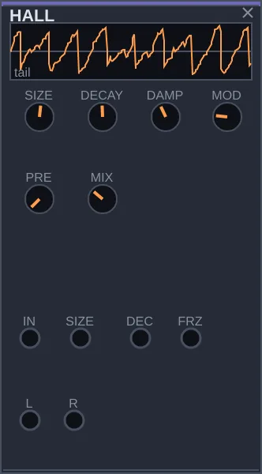
What it is
HALL is a stereo reverb, the sound of a large hall, a church or a studio plate. Unlike the repeats you can make out in SPACE, here the tail is smooth and dense from the start. It can also freeze the sound and keep it ringing indefinitely.
How to think about it
Use SPACE when you want to hear echoes and HALL when you want a room. Since size and length accept control signals, the room can breathe with a slow wave, grow along with the music, or open up only on certain notes. The FRZ input freezes the tail while the signal is on: a chord becomes a continuous backdrop for the rest of the patch to play over.
Controls
SIZE: the size of the space, from a small room to a hall.
DECAY: how long the tail takes to die, from a fifth of a second to about fifteen seconds. At maximum it barely dies.
DAMP: how much of the highs is lost in the tail. At zero, bright; at maximum, dark, like a room full of curtains.
MOD: a slight wobble inside the tail, which avoids a metallic tone.
PRE: a short delay before the reverb starts, up to about 120 milliseconds. It helps separate the direct sound from the room and makes the space feel larger.
MIX: the blend between the original and the processed sound.
Inputs: IN, the sound; SIZE and DEC, to modulate size and length; FRZ, to freeze. Outputs: L and R, the two sides of the stereo image.
Try this
Connect CHORD's OUT to the IN input, and L and R to two MIXER inputs.
Raise MIX and DECAY and hear the chord gain a long tail.
Connect the UNI output of a very slow FUNCTION to SIZE. The room starts to breathe.
Connect the GATE output of a DECISION with low BIAS to FRZ. Every now and then the tail freezes.
LOOPER
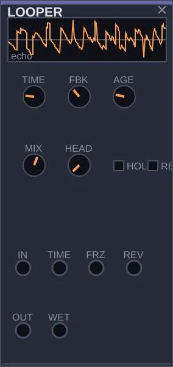
What it is
LOOPER is an echo that imitates magnetic tape. It repeats the sound with a delay, and the repeats can age on each pass, losing brightness and gaining noise. It can also freeze a stretch and repeat it endlessly, or play it backwards.
How to think about it
A lot of music made with tape machines lives on three gestures: repeating a phrase, playing it backwards, and letting the echo wear out. LOOPER has all three. With AGE at zero it is a clean digital echo; as you raise AGE, the marks of tape appear. With HOLD on, whatever is in the loop starts repeating, and you can play over it. SPACE is for creating ambience; LOOPER, for echoes you hear as repeats.
Controls
TIME: the length of the loop, from a thousandth of a second to two seconds.
FBK: how much of the repeated sound goes back into the loop. Near 1 the repeats barely end; above 1 they build up until they saturate.
AGE: tape wear: loss of highs, wavering pitch, saturation and hiss.
MIX: the blend between the original sound and the repeats.
HOLD: freezes the loop. It stops recording and repeats the current stretch endlessly.
REV: plays the loop backwards.
HEADS: how many playback heads, from 1 to 4. With more than one, each head repeats at a different time, and the echo gets dense and rhythmic.
Inputs: IN, the sound; TIME, to modulate the time; FRZ and REV, to freeze and reverse with a signal. Outputs: OUT, the blend; WET, the repeats only.
Try this
Connect a voice that plays notes to the IN input, and OUT to a MIXER input.
Set TIME to about 0.35 seconds, FBK to the middle and AGE to a third. You hear a tape echo.
Raise HEADS to 3 and hear the repeats multiply.
Turn HOLD on at the end of a phrase. It keeps circling while the voice goes on playing. Turn REV on to hear it backwards.
SWIRL
What it is
SWIRL brings together four movement effects: chorus, flanger, ensemble and phaser. They all make the sound undulate, widen, or seem to spin, without creating audible echoes. It takes a sound in and gives it back in stereo.
How to think about it
The four effects share the same idea: blending the sound with a slightly delayed copy of itself, with the delay changing slowly. Chorus thickens and widens, like several people playing the same note. Flanger produces a metallic sweep, like a passing jet. Ensemble is a denser chorus, typical of string synthesizers. Phaser creates notches that rise and fall through the spectrum. On a pad or a single voice, it adds movement and width.
Controls
TYPE: the effect: chorus, flanger, ensemble or phaser.
RATE: the speed of the undulation, from one cycle every fifty seconds to eight per second.
DEPTH: the intensity of the undulation.
FBK: how much of the processed sound goes back to the input. It makes flanger and phaser more pronounced; near the extremes, they start sounding on their own.
SPRD: the difference between left and right, that is, the width of the stereo image.
TONE: darkens or brightens the processed sound.
AGE: imitates the old analog circuits of these effects, with a little noise and instability.
MIX: the blend between the original and the processed sound.
Inputs: IN, the sound; RTM and MXM, to modulate speed and blend. Outputs: L and R.
Try this
Connect CHORD's OUT to the IN input, and L and R to two MIXER inputs.
With TYPE on chorus, RATE low and DEPTH near the middle, hear the chord widen.
Switch TYPE to flanger, raise FBK and lower RATE. The sound gains a metallic sweep.
Try phaser with a very slow RATE on a background sound.
MEMORY
What it is
MEMORY continuously records the last three seconds of whatever goes into it and plays that material back in tiny pieces, called grains. Each grain is a short fragment, and many grains together form a cloud of sound that can be transposed, smeared in time, or frozen. The technique is called granular synthesis.
How to think about it
With MEMORY, the patch starts remembering what it played. A phrase that has just sounded comes back as texture, higher or lower, stretched, blurred. Short, sparse grains give a rough rhythm; long, numerous grains, a smooth cloud. With HOLD on, recording stops and the stored stretch becomes fixed material that the grains keep exploring. LOOPER repeats whole stretches; MEMORY breaks them into particles.
Controls
GRAIN: the length of each grain, from 5 milliseconds to half a second. Short, a grainy texture; long, almost the original sound.
DENS: how many new grains are born per second. Few give isolated dots; many, a continuous cloud.
POS: where in the recording the grains are read from, from the most recent to the oldest.
SPRAY: scatters each grain's reading point, blurring time.
PITCH: transposes the grains, up to two octaves up or down.
FBK: feeds the cloud back into the recording, so the material builds up and wears down.
BLEND: the blend between the incoming sound and the cloud.
HOLD: stops recording and freezes the stored material.
Inputs: IN, the sound; POS, to move the reading point; PTCH, to transpose; FRZ, to freeze with a signal. Output: OUT.
Try this
Connect a voice that plays a melody to the IN input, and OUT to a MIXER input.
Set GRAIN to about 0.1 seconds and DENS near 30, and hear the melody turn into a cloud.
Raise SPRAY and set PITCH an octave up.
Turn HOLD on. Recording stops, and the cloud carries on from the last stored stretch.
SAMPLER
What it is
SAMPLER records a stretch of whatever goes into it, up to about eight seconds, divides that stretch into slices, and plays them when it receives pulses. It is the gesture of hip-hop and electronic music samplers: take a recording, chop it up and play it back in another order, faster, slower or backwards.
How to think about it
While the REC input is on, it records what arrives at IN. When REC turns off, the stretch is kept. From then on, each pulse at TRIG plays a slice, and the POS input chooses which one. With a TRIGSEQ triggering and a SEQUENCE choosing slices, the recording recombines into a new rhythm. Feeding the patch's own output into it, the instrument starts reusing what it has just played.
Controls
START: where, within the slice, playback begins.
SPEED: the playback speed, from a quarter to four times the original. Negative plays backwards. Normally, faster also sounds higher.
SLICE: how many equal slices the recording is divided into, from 1 to 16.
REPIT: off, speed and pitch move together, as on tape; on, the pitch comes from the PIT input and the slice keeps its length.
WEAR: wear on each trigger: an imprecise start, loss of definition, a grainy sound.
LOOP: off, each slice plays once; on, it repeats.
Inputs: TRIG, the pulse that plays; IN, the sound to record; REC, the signal that records while it is on; POS, to choose the slice; PIT, to tune. Output: OUT.
Try this
Connect a voice that plays a phrase, for example a SEQUENCE playing an OSC, to the IN input.
To record, connect the DIV output of a LOGIC to REC, with CLOCK's CLK output on LOGIC's CLK and DIV at 16. Connect SAMPLER's OUT to the MIXER.
Set SLICE to 8, connect T1 of a TRIGSEQ to TRIG and the CV output of a TURING to POS. The recorded phrase comes back chopped and reordered.
Move SPEED to the left of center and hear the slices backwards.
TURNTABLE
What it is
TURNTABLE plays a recording as if it were on a vinyl record. It records a stretch, like SAMPLER, but playback imitates a real platter: the record has weight, takes time to get up to speed, slows down gradually, and can be pushed back and forth, as in a DJ's scratch.
How to think about it
SAMPLER jumps from one point to another instantly. TURNTABLE has inertia, and that is what gives it the vinyl sound: the pitch slides when the record speeds up or slows down. The SCR input is the hand on the record: a slow wave there makes the record go back and forth in time. The BRK input switches the motor off, and the sound drops until it stops, the effect known as tape stop. There is no automatic tempo sync: getting the rhythm right is part of the gesture.
Controls
SPEED: the speed the motor tries to reach, from half to double the original. Negative spins the record backwards.
TORQ: the strength of the motor, that is, how quickly the record reaches speed. Low, the start has a long wavering of pitch; at minimum, the record moves only by hand, through the SCR input.
FRIC: the friction. It decides how quickly the record stops when braking and how much it drifts back into rhythm on its own after a scratch.
GRAB: how firm the hand is, how much the signal on SCR moves the record.
START: where the needle drops on each pulse at TRIG.
WEAR: wear on the record: crackles and small irregularities in rotation.
LOOP: off, the record runs out and stops; on, playback wraps around and starts again.
Inputs: TRIG, to drop the needle again; IN, the sound to record; REC, the signal that records while it is on; SCR, the hand on the record; BRK, the brake. Output: OUT.
Try this
Record a phrase as with SAMPLER: the voice on IN and the DIV output of a LOGIC, with DIV at 16, on REC. Connect OUT to the MIXER and turn LOOP on.
Connect the BI output of a FUNCTION at about 2 Hz to SCR and raise GRAB to the middle. The record goes back and forth, a scratch.
Remove the cable from SCR. Connect the GATE output of a DECISION with low BIAS to BRK. Every now and then, the record brakes and spins up again.
OUT 4 modules
MIXER
What it is
MIXER combines up to four sounds into one stereo output. Each channel has its own volume, its position between the left and right speakers, and a switch to silence it. It is how the patch's voices reach MASTER, and from there your ears.
How to think about it
In Rasgo Modular, each input accepts only one cable, so sounds don't add up by accident: to combine voices, you need a MIXER. It is also where you balance the patch, deciding what sits in front and what sits behind, and where you open up the stereo image, placing each voice somewhere between left and right. Almost every patch ends with a MIXER connected to MASTER, and the seeds come that way already.
Controls
CH1, CH2, CH3, CH4: the volume of each channel, from silence to 12 dB above normal.
PAN: the position of each channel between left and right.
MUTE: silences the channel without touching its volume, to compare the patch with and without that voice.
OUT: the output volume, after the sum.
Inputs: 1, 2, 3 and 4, the channels. Output: L+R, the stereo mix.
Try this
Connect two different voices to inputs 1 and 2, and L+R to MASTER's IN input, if it isn't connected already.
Balance the two volumes until neither voice covers the other.
Move one channel's PAN to the left and the other's to the right. The voices separate in space.
Use MUTE to hear each voice alone and then both together.
MASTER
What it is
MASTER is the last stage before the sound card. It sets the final volume, adjusts the width of the stereo image and protects the output from peaks, so nothing reaches the speakers distorted or too loud. Its output is already connected to the computer's sound: there is nowhere to cable it.
How to think about it
MIXER adds things up, but the sum can have peaks, an exaggerated stereo image, or a constant offset that wastes the speakers' power without making sound. MASTER takes care of that. The meter shows the level; a small square lights up when the limiter has to hold back a peak. In practice, set the volume with GAIN and leave the protections on. The silence switch in the app's header is this module's MUTE.
Controls
GAIN: the final volume. Raise it until the meter gets close to the top without the limiter square staying lit all the time.
WIDTH: the width of the stereo image. At zero, mono; at 1, normal; above, wider.
MONO: folds both sides into one, to check how the patch sounds on a single speaker.
DC: removes the constant offset from the signal. Leave it on.
LIMIT: the limiter, which keeps peaks from going past the ceiling. Leave it on.
MUTE: silences the output, without a click.
BODY: softens strong, sustained highs that would tire the ear. It only acts when they appear.
Input: IN. Outputs: OUT, already connected to the sound card; VU, the level as a control signal.
Try this
Play any seed and watch MASTER's meter.
Move WIDTH from zero to maximum and hear the sound open up.
Connect VU to the IN1 input of a CONTROL with SCALE at −1, and O1 to the CV1 of a VCA that controls a background voice. When the rest of the patch gets loud, that voice steps back.
SCOPE
What it is
SCOPE shows a signal's waveform, like an oscilloscope, and measures what it hears: volume, brightness, pitch and the start of each note. Those measurements come out through cables, as control signals. That way the patch can react to its own sound.
How to think about it
On an ordinary oscilloscope, the screen is the end of the road. Here, what SCOPE measures can go back into the patch: the brightness of the mix opens a filter, one voice's pitch tunes another, the start of each note fires an envelope. Sound passes through it unchanged, via the THRU output, so it can sit in the middle of any chain. With SIGNAL-IN, it can also listen to an outside sound and make Rasgo Modular follow it.
Controls
TRIG: the level the signal must cross to steady the picture on the screen.
EDGE: whether that crossing counts on the way up or the way down.
REJ: a tolerance margin, so noise doesn't trigger the screen several times.
RESP: how fast the volume, brightness and pitch measurements are. Fast, they track every detail; slow, they show the trend.
HOLD: freezes the measurements at their current values.
SENS: the sensitivity of the note-start detector. High, any rise counts; low, only strong attacks.
Inputs: IN, the sound; EXT, an external signal to steady the screen. Outputs: THRU, the untouched sound; TRIG, the trigger pulse; LVL, the volume; BRT, the brightness; PIT, the pitch; ONS, a pulse at the start of each note.
Try this
Put SCOPE between a voice and the MIXER: the voice on IN, THRU to the MIXER. Watch the waveform.
Connect BRT to the FC input of another voice's FILTER. When the first voice gets bright, the second opens up too.
Connect ONS to the GATE input of a DRUM. Each note of the first voice now comes with a hit.
NOTE-OUT
What it is
NOTE-OUT writes down the notes of a voice. Placed in the path of the pitch and trigger signals, it logs each note that passes, with pitch, length, intensity and accent, in the score the app records alongside the audio. It has no controls and doesn't change the sound.
How to think about it
In a generative patch, notes come and go. NOTE-OUT keeps a record of them for anyone who wants to study, transcribe or rework the piece later. It sits in the middle of the path: the pitch comes in on PITCH and goes out unchanged on PTHR; the pulse comes in on GATE and goes out unchanged on GTHR. When you record with REC, the text file that accompanies the audio includes those notes.
Controls
NOTE-OUT has no controls. Inputs: GATE, the pulse for each note; PITCH, the pitch; VEL, the intensity; ACC, the accent. Outputs: GTHR and PTHR, the same signals, to continue on to the voice.
Try this
In a melody made with QUANTIZER, OSC and ENVELOPE, connect QUANTIZER's PTCH to NOTE-OUT's PITCH, and PTHR to the OSC's 1V/O.
Connect the pulse that fires the envelope to NOTE-OUT's GATE, and GTHR to the envelope's GATE. The sound stays the same.
Record a stretch with REC. Next to the audio file, the score's text file lists every note played.
Contact
Lúcio Araújo — authorship and development. Bugs, licence, credit: